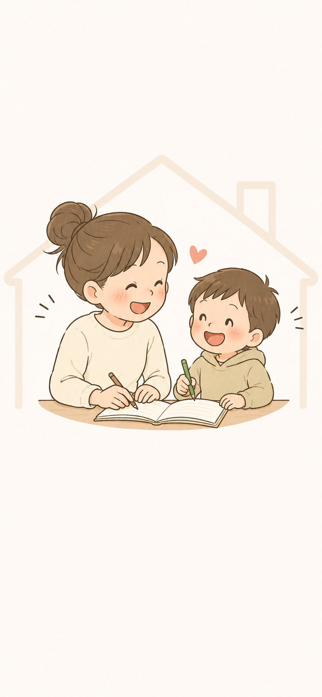
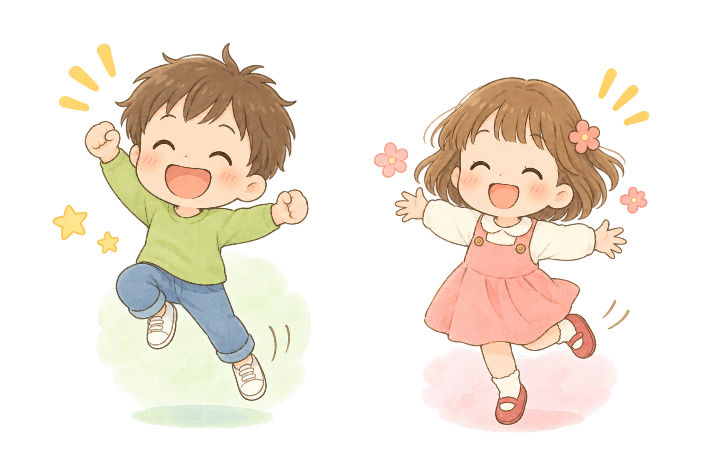

<!DOCTYPE html>
<html lang="ja">
<head>
  <meta charset="UTF-8">
  <meta name="viewport" content="width=device-width, initial-scale=1.0, viewport-fit=cover">
  <title>親子まるごと診断</title>
  <meta name="description" content="13場面の逆引きで、今日の困りごとに応える。親子まるごと診断アプリ">
  <script src="https://unpkg.com/react@18/umd/react.production.min.js"></script>
  <script src="https://unpkg.com/react-dom@18/umd/react-dom.production.min.js"></script>
  <script src="https://unpkg.com/@babel/standalone@7/babel.min.js"></script>
  <style>
    :root {
      --primary: #4A9A87;
      --primary-bg: #EAF5F2;
      --primary-dark: #2D7A68;
      --bg: #F4FAF8;
      --card: #FFFFFF;
      --text: #222222;
      --text-sub: #666;
      --border: #E0EEEA;
      --r: 16px;
      --shadow: 0 2px 16px rgba(0,0,0,0.08);
    }
    * { box-sizing: border-box; margin: 0; padding: 0; }
    body {
      font-family: -apple-system, BlinkMacSystemFont, "Hiragino Kaku Gothic ProN", "Yu Gothic", "Noto Sans JP", sans-serif;
      background: var(--bg);
      min-height: 100vh;
      color: var(--text);
      -webkit-text-size-adjust: 100%;
    }
    #root { max-width: 540px; margin: 0 auto; min-height: 100vh; padding-bottom: 90px; }
    button { cursor: pointer; font-family: inherit; border: none; background: none; }
    a { color: var(--primary); text-decoration: none; }
    a:hover { text-decoration: underline; }

    /* LAYOUT */
    .page { padding: 16px 16px 0; }
    .page-header { padding: 20px 16px 12px; display: flex; align-items: center; gap: 10px; }
    .back-btn { font-size: 22px; padding: 4px 8px 4px 0; color: var(--text-sub); }
    .page-title { font-size: 17px; font-weight: 700; }

    /* CARD */
    .card { background: var(--card); border-radius: var(--r); padding: 18px; box-shadow: var(--shadow); margin-bottom: 12px; }
    .card-sm { padding: 14px; }
    .card-bordered { border: 1.5px solid var(--border); box-shadow: none; }

    /* BUTTONS */
    .btn { border-radius: 50px; padding: 15px 24px; font-size: 16px; font-weight: 700; width: 100%; transition: opacity 0.15s, transform 0.1s; display: block; text-align: center; }
    .btn:active { transform: scale(0.98); }
    .btn-primary { background: linear-gradient(135deg, #5DB5A0, #3A8A77); color: #fff; }
    .btn-primary:disabled { background: #CCC; }
    .btn-secondary { background: #EEF3F1; color: var(--text); }
    .btn-ghost { background: none; color: var(--primary); font-size: 15px; font-weight: 600; padding: 8px; width: auto; border-radius: 8px; }

    /* SCENE BUTTON */
    .scene-btn {
      background: var(--card);
      border-radius: 14px;
      padding: 16px;
      margin-bottom: 8px;
      box-shadow: var(--shadow);
      display: flex;
      align-items: center;
      justify-content: space-between;
      width: 100%;
      text-align: left;
    }
    .scene-btn:active { background: #E8F5F1; transform: scale(0.99); }
    .scene-btn-label { font-size: 16px; font-weight: 600; }
    .scene-btn-num { font-size: 13px; color: var(--text-sub); margin-bottom: 2px; }
    .scene-arrow { color: var(--text-sub); font-size: 18px; }
    .scene-new { background: #EFF8F5; border-left: 3px solid var(--primary); }

    /* TAG / BADGE */
    .tag { display: inline-block; padding: 3px 10px; border-radius: 20px; font-size: 12px; font-weight: 600; }
    .tag-gray { background: #F0F0EE; color: #555; }
    .tag-orange { background: #D6F0EA; color: #2D7A68; }
    .tag-blue { background: #E3EEF9; color: #2A6099; }

    /* TYPE CHIPS */
    .type-nikoniko { background: #FFF6D4; color: #8A6800; }
    .type-monoshiri { background: #E6F4E6; color: #2E6B2E; }
    .type-gungun { background: #FFF0E0; color: #A04500; }
    .type-funwari { background: #FAEAF4; color: #882060; }
    .type-tokoton { background: #EAEAF8; color: #3535AA; }

    /* SECTION HEADER */
    .sec-num { font-size: 11px; font-weight: 700; color: var(--primary); text-transform: uppercase; letter-spacing: 0.05em; margin-bottom: 4px; }
    .sec-title { font-size: 15px; font-weight: 700; margin-bottom: 10px; }

    /* NG / OK */
    .ng-ok-box { border-radius: 12px; overflow: hidden; margin-bottom: 12px; }
    .ng-row { background: #FFF0EC; padding: 12px 14px; display: flex; gap: 8px; align-items: baseline; }
    .ok-row { background: #EFF9F1; padding: 12px 14px; display: flex; gap: 8px; align-items: baseline; }
    .ngok-label { font-size: 13px; font-weight: 700; flex-shrink: 0; }
    .ng-label { color: #C04040; }
    .ok-label { color: #2A8040; }
    .ngok-text { font-size: 14px; line-height: 1.5; }
    .why-box { background: #F7F7F4; border-radius: 10px; padding: 11px 14px; margin-top: 10px; font-size: 13px; line-height: 1.6; color: #444; }
    .why-brain { font-size: 14px; font-weight: 700; color: #555; margin-bottom: 2px; }

    /* TYPE ROWS */
    .type-row { border-radius: 12px; padding: 12px 14px; margin-bottom: 7px; }
    .type-row-head { display: flex; align-items: center; gap: 8px; margin-bottom: 5px; }
    .type-name-chip { font-size: 12px; font-weight: 700; padding: 2px 9px; border-radius: 20px; }
    .type-note { font-size: 11px; color: var(--text-sub); }
    .type-say { font-size: 14px; line-height: 1.5; }
    .say-easier-box { margin-top: 6px; background: rgba(255,255,255,0.6); border-radius: 8px; padding: 8px 10px; font-size: 13px; color: #555; }

    /* REVIEW ITEMS */
    .review-item { border-radius: 12px; padding: 12px 14px; margin-bottom: 7px; background: #F9F9F7; border: 1.5px solid #EEE; cursor: pointer; }
    .review-item.open { background: #FFF8F0; border-color: #E0A070; }
    .review-item-head { display: flex; align-items: center; justify-content: space-between; }
    .review-num { font-size: 12px; font-weight: 700; color: var(--primary); margin-right: 6px; }
    .review-title { font-size: 14px; font-weight: 600; }
    .review-content { margin-top: 10px; font-size: 13px; color: #555; line-height: 1.6; }
    .review-action { margin-top: 10px; background: #FFF0E0; border-radius: 8px; padding: 10px; font-size: 13px; color: #7A3500; }

    /* GLASSES LIST */
    .glasses-grid { display: grid; grid-template-columns: 1fr 1fr; gap: 8px; }
    .glasses-item { border-radius: 12px; padding: 12px; border: 2px solid #EEE; background: #FFF; cursor: pointer; transition: all 0.15s; }
    .glasses-item.selected { border-color: var(--primary); background: var(--primary-bg); }
    .glasses-label { font-size: 11px; color: var(--text-sub); margin-bottom: 3px; }
    .glasses-name { font-size: 14px; font-weight: 700; }

    /* PARENT TYPES */
    .ptype-list { display: grid; grid-template-columns: 1fr 1fr; gap: 8px; }
    .ptype-item { border-radius: 12px; padding: 12px; border: 2px solid #EEE; background: #FFF; cursor: pointer; transition: all 0.15s; }
    .ptype-item.selected { border-color: var(--primary); background: var(--primary-bg); }
    .ptype-item.highlighted { border-color: #7ABFB0; background: #F0FAF7; }
    .ptype-name { font-size: 15px; font-weight: 700; margin-bottom: 3px; }
    .ptype-desc { font-size: 12px; color: var(--text-sub); line-height: 1.4; }

    /* DIAGNOSIS */
    .q-card { background: var(--card); border-radius: 14px; padding: 18px; box-shadow: var(--shadow); margin-bottom: 14px; }
    .q-text { font-size: 17px; font-weight: 600; line-height: 1.6; margin-bottom: 18px; }
    .q-scale { display: flex; gap: 6px; }
    .q-btn { flex: 1; border-radius: 10px; padding: 12px 4px; font-size: 12px; border: 2px solid #DDE8E5; background: #FFF; cursor: pointer; text-align: center; transition: all 0.12s; line-height: 1.3; }
    .q-btn.sel { border-color: var(--primary); background: var(--primary-bg); font-weight: 700; color: var(--primary); }
    .q-btn-na { font-size: 13px; color: var(--text-sub); border: 1.5px solid #E0E0E0; border-radius: 8px; padding: 10px; cursor: pointer; text-align: center; background: #FFF; margin-top: 8px; width: 100%; }
    .q-btn-na.sel { border-color: #AAA; background: #F0F0F0; color: #444; font-weight: 700; }
    .q-progress { height: 5px; background: #DDE8E5; border-radius: 3px; margin-bottom: 18px; overflow: hidden; }
    .q-progress-bar { height: 100%; background: linear-gradient(90deg, #5DB5A0, #3A8A77); border-radius: 3px; transition: width 0.3s; }

    /* RADAR */
    .radar-wrap { display: flex; justify-content: center; margin: 10px 0; }

    /* RESULT */
    .result-label { font-size: 24px; font-weight: 800; text-align: center; margin-bottom: 4px; color: var(--primary); }
    .result-sub { font-size: 13px; text-align: center; color: var(--text-sub); margin-bottom: 16px; }
    .type-dist { display: flex; flex-direction: column; gap: 7px; margin-top: 14px; }
    .type-bar-row { display: flex; align-items: center; gap: 8px; }
    .type-bar-label { width: 56px; font-size: 13px; font-weight: 600; flex-shrink: 0; }
    .type-bar-track { flex: 1; height: 10px; background: #EEE; border-radius: 5px; overflow: hidden; }
    .type-bar-fill { height: 100%; border-radius: 5px; transition: width 0.5s; }
    .type-bar-pct { width: 36px; font-size: 12px; color: var(--text-sub); text-align: right; }

    /* COMBO */
    .combo-box { background: #EFF8F5; border: 1.5px solid #8FCFC2; border-radius: 12px; padding: 14px; margin-bottom: 10px; }
    .combo-title { font-size: 14px; font-weight: 700; color: #2D7A68; margin-bottom: 6px; }
    .combo-text { font-size: 14px; color: #1E5548; line-height: 1.6; margin-bottom: 8px; }
    .combo-hint { font-size: 13px; color: #2D6B5E; background: rgba(255,255,255,0.6); border-radius: 8px; padding: 8px; }

    /* CARD 45 */
    .card45-item { border-radius: 12px; padding: 14px; border: 1.5px solid #EEE; background: #FFF; margin-bottom: 8px; cursor: pointer; }
    .card45-item:active { background: #F9F4EE; }
    .card45-head { font-size: 14px; font-weight: 700; margin-bottom: 4px; }
    .card45-sketch { font-size: 12px; color: var(--text-sub); line-height: 1.4; }
    .card45-section { margin-bottom: 16px; }
    .card45-section-title { font-size: 14px; font-weight: 700; color: var(--primary); border-bottom: 1.5px solid var(--primary-bg); padding-bottom: 5px; margin-bottom: 10px; }
    .card45-text { font-size: 14px; line-height: 1.7; color: #333; }

    /* NAV */
    .nav-bar { position: fixed; bottom: 0; left: 50%; transform: translateX(-50%); width: 100%; max-width: 540px; background: #FFF; border-top: 1.5px solid #E0EEEA; display: flex; padding: 6px 0 max(10px, env(safe-area-inset-bottom)); z-index: 100; }
    .nav-item { flex: 1; display: flex; flex-direction: column; align-items: center; gap: 4px; padding: 4px 2px; cursor: pointer; }
    .nav-icon { font-size: 22px; line-height: 1; }
    .nav-label { font-size: 11px; color: var(--text-sub); font-weight: 600; }
    .nav-item.active .nav-icon { filter: none; }
    .nav-item.active .nav-label { color: var(--primary); font-weight: 700; }
    .nav-icon-img { width: 44px; height: 44px; object-fit: contain; }
    .page-title { font-size: 18px; font-weight: 700; }
    .back-btn { font-size: 26px; padding: 4px 8px 4px 0; color: var(--text-sub); }

    /* SETUP */
    .setup-step-indicator { display: flex; gap: 6px; justify-content: center; margin-bottom: 20px; }
    .setup-dot { width: 8px; height: 8px; border-radius: 50%; background: #DDD; }
    .setup-dot.active { background: var(--primary); }

    /* UTIL */
    .mt4 { margin-top: 4px; } .mt8 { margin-top: 8px; } .mt12 { margin-top: 12px; } .mt16 { margin-top: 16px; }
    .mb4 { margin-bottom: 4px; } .mb8 { margin-bottom: 8px; } .mb12 { margin-bottom: 12px; }
    .text-sub { font-size: 13px; color: var(--text-sub); line-height: 1.6; }
    .text-sm { font-size: 13px; line-height: 1.6; }
    .text-xs { font-size: 12px; color: var(--text-sub); }
    .bold { font-weight: 700; }
    .center { text-align: center; }
    .divider { height: 1px; background: var(--border); margin: 14px 0; }
    .flex-between { display: flex; justify-content: space-between; align-items: center; }

    /* INPUT */
    .input-field { width: 100%; border: 2px solid #DDD; border-radius: 10px; padding: 11px 14px; font-size: 15px; font-family: inherit; background: #FFF; outline: none; transition: border-color 0.15s; }
    .input-field:focus { border-color: var(--primary); }

    /* NOTICE */
    .notice-box { background: #F2F8FF; border-left: 3px solid #5090CC; border-radius: 8px; padding: 12px 14px; font-size: 13px; color: #304060; line-height: 1.6; margin-bottom: 12px; }
    .notice-warn { background: #FFFBEC; border-left-color: #C09020; color: #604010; }
  </style>
</head>
<body>
<div id="root"></div>
<script>
  Babel.registerPreset('react-classic', {
    presets: [[Babel.availablePresets.react, { runtime: 'classic' }]]
  });
</script>
<script type="text/babel" data-presets="react-classic">
const { useState, useEffect, useCallback, useRef } = React;

/* ============================================================
   DATA
   ============================================================ */
const FREE_APP_URL = 'https://jyu0mama.github.io/usagi-care-app/shikou-kuse/';
const STORAGE_KEY = 'oyako_v1_profile';
const BALANCE_THRESHOLD = 15;
const BLEND_THRESHOLD = 10;
const TREND_MIN_COUNT = 3;

const SPECTRUMS = [
  { id: 'move',       label: '動き出し方',     A: { id: 'move_A',       name: 'まず動くメガネ' },   B: { id: 'move_B',       name: 'じっくりメガネ' } },
  { id: 'focus',      label: '目の向く先',     A: { id: 'focus_A',      name: 'ゴール志向メガネ' }, B: { id: 'focus_B',      name: 'リスク発見メガネ' } },
  { id: 'standard',   label: '判断のものさし', A: { id: 'standard_A',   name: '自分基準メガネ' },   B: { id: 'standard_B',   name: 'まわりの目メガネ' } },
  { id: 'understand', label: '理解のしかた',   A: { id: 'understand_A', name: '正しい手順メガネ' }, B: { id: 'understand_B', name: '選択肢メガネ' } },
  { id: 'convince',   label: '納得のしかた',   A: { id: 'convince_A',   name: '感覚メガネ' },       B: { id: 'convince_B',   name: '結果・数字メガネ' } },
  { id: 'outlook',    label: '見通しの色',     A: { id: 'outlook_A',    name: '楽観メガネ' },       B: { id: 'outlook_B',    name: '最悪想定メガネ' } },
];

const ALL_GLASSES = SPECTRUMS.flatMap(s => [s.A, s.B]);

const GLASSES_HINT = {
  move_A:      { parent: 'leader, boukensha' },
  move_B:      { parent: 'tankyusha' },
  focus_A:     { parent: 'kaitakusha' },
  focus_B:     { parent: 'mamorite, sewayaku' },
  standard_A:  { parent: '' },
  standard_B:  { parent: 'sewayaku, kikite' },
  understand_A:{ parent: 'shokunin, tankyusha' },
  understand_B:{ parent: '' },
  convince_A:  { parent: 'hyogensha' },
  convince_B:  { parent: 'shokunin, kaitakusha' },
  outlook_A:   { parent: 'boukensha' },
  outlook_B:   { parent: 'mamorite' },
};

const PARENT_TYPES = [
  { id: 'shokunin',   name: '職人',   desc: '丁寧で基準が高い。きちんとしていないと気になる' },
  { id: 'sewayaku',   name: '世話役', desc: 'よく気づき、人のために動く。つい先回りしてしまう' },
  { id: 'kaitakusha', name: '開拓者', desc: '前に進む力と段取り。成果や目標に向かうのが好き' },
  { id: 'hyogensha',  name: '表現者', desc: '感性と共感が豊か。自分や子の"特別さ"を大事にする' },
  { id: 'tankyusha',  name: '探究者', desc: '深く考え、情報を集める。納得いくまで調べたい' },
  { id: 'mamorite',   name: '守り手', desc: '安全と安定を用意する。リスクや最悪を先に考える' },
  { id: 'boukensha',  name: '冒険者', desc: '明るく前向き。「なんとかなる」で挑戦を後押しする' },
  { id: 'leader',     name: 'リーダー', desc: '決断力があり引っ張る。物事を仕切るのが得意' },
  { id: 'kikite',     name: '聞き手', desc: '穏やかで受け止め上手。対立や揉めごとを避けたい' },
];

const CHILD_TYPES = [
  { id: 'nikoniko',  name: 'にこにこ',  label: 'にこにこ',  cls: 'type-nikoniko',  barColor: '#F0B800', entry: '一緒に／つながり／楽しく' },
  { id: 'monoshiri', name: 'ものしり',  label: 'ものしり',  cls: 'type-monoshiri', barColor: '#48A048', entry: '理由・仕組み・見通しを先に' },
  { id: 'gungun',    name: 'ぐんぐん',  label: 'ぐんぐん',  cls: 'type-gungun',    barColor: '#E87020', entry: '短く／すぐ動ける形で／選ばせる' },
  { id: 'funwari',   name: 'ふんわり',  label: 'ふんわり',  cls: 'type-funwari',   barColor: '#D060A0', entry: '安心を先に／最小の一歩／強制しない' },
  { id: 'tokoton',   name: 'とことん',  label: 'とことん',  cls: 'type-tokoton',   barColor: '#5050CC', entry: '本人が決める／納得／終わりの見通し' },
];
const CHILD_TYPE_MAP = Object.fromEntries(CHILD_TYPES.map(t => [t.id, t]));

const WHY_TAGS = {
  exec:      { name: '実行機能',       text: '切り替えたり、我慢したりする力は、まだ育っている途中です' },
  outlook:   { name: '見通し',         text: '先が見えないと、動き出しにくくなります' },
  arousal:   { name: '感情の高ぶり',   text: '気持ちが大きく動いているときは、言葉が入りにくくなります' },
  autonomy:  { name: '自己決定',       text: '自分で決めたことのほうが、続きやすくなります' },
  smallstep: { name: '小さな一歩',     text: '最初の一歩が小さいほど、取りかかりやすくなります' },
  concrete:  { name: '具体性',         text: '「ちゃんと」より、何をするかが分かるほうが動けます' },
  safety:    { name: '安心',           text: '安心があるほど、新しいことに手が伸びます' },
  direction: { name: '注意の向き',     text: 'やめてほしいことより、してほしいことを言うほうが届きます' },
  sensory:   { name: '感覚の受け取り方', text: '音や光や気配の感じ方には、人によって差があります' },
  sequence:  { name: '発達の順序',     text: 'できるようになる時期には、幅があります' },
};

const GLASSES_BIAS = {
  move_A:      { seeing: 'お子さんが「考えている時間」を、「遅い・のろい」と誤読してしまいやすいときです', hand: '「今、考えてるんだね」と待つ' },
  move_B:      { seeing: 'お子さんの「まず動く」という動き方を、「落ち着きがない」と誤読してしまいやすいときです', hand: '動くのも学び方の一つと見る' },
  focus_A:     { seeing: '前に進もうとする気持ちが強いぶん、お子さんが今どこで詰まっているかを見落としやすいときです', hand: '「どこで引っかかってる？」と立ち止まりの場所を聞く' },
  focus_B:     { seeing: 'できている所より、危うい所ばかりが目に入りやすいときです', hand: '1日1回「今日できてたこと」を口に出す' },
  standard_A:  { seeing: '自分の感覚を基準にするため、お子さんの感じ方や速さが違うことに気づきにくいときです', hand: '「あなたはどう感じた？」と子ども自身の基準を先に聞く' },
  standard_B:  { seeing: 'お子さんの個性を「平均より遅れている・劣っている」と誤読してしまいやすいときです', hand: '比較を「みんな」から「昨日のこの子」へ' },
  understand_A:{ seeing: 'お子さんの独自のやり方を「間違い」と誤読してしまいやすいときです', hand: '「その手もアリだね」を一度言う' },
  understand_B:{ seeing: '選択肢を渡しすぎることで、多すぎてお子さんが動けなくなることがあります', hand: '選択肢は2〜3つに絞ってから渡す' },
  convince_A:  { seeing: '感覚で動けるぶん、理由を必要とするお子さんへの伝え方が薄くなりやすいときです', hand: '「なぜそうするか」を一言だけ添えてから伝える' },
  convince_B:  { seeing: '途中の粘りや工夫を見落としがちです', hand: '結果でなく「やり方」をほめる' },
  outlook_A:   { seeing: '「大丈夫」と信じる力が強いぶん、お子さんが不安を感じていることを見落としやすいときです', hand: '「心配なことある？」と先に聞いてから話す' },
  outlook_B:   { seeing: '小さなつまずきを、大きな問題に見てしまいやすいときです', hand: '「本当に危険？　わたしの不安？」と一呼吸' },
};

const SCENES = [
  { id: 'morning',    name: '朝、動かない' },
  { id: 'switch',     name: '切り替えられない（ゲーム・動画）' },
  { id: 'homework',   name: '宿題に取りかからない' },
  { id: 'sleep',      name: '夜、寝ない' },
  { id: 'tantrum',    name: 'かんしゃく・爆発' },
  { id: 'scolded',    name: '注意されると怒る・投げ出す' },
  { id: 'blame',      name: '人のせいにする' },
  { id: 'reluctant',  name: '登園・登校しぶり' },
  { id: 'outside',    name: '外で声が出ない・挨拶' },
  { id: 'friends',    name: '友だちとのトラブル' },
  { id: 'perfection', name: '失敗を怖がる・完璧主義' },
  { id: 'newthing',   name: '新しいことに尻込みする' },
  { id: 'silence',    name: '気持ちが言えない・ダンマリ' },
  { id: 'athome',     name: '外ではいい子、家では荒れる' },
];

/* ── 場面データ（STEP2：朝、動かない のみ） ── */
const SCENE_DATA = {
  morning: {
    sceneId: 'morning',
    sceneName: '朝、動かない',
    common: {
      ng: '「早くして！」',
      ok: '「先に着替えと歯みがき、どっちからいく？」',
      whyTag: 'autonomy',
      whyLine: 'こちらが決めた順番より、自分で選んだ順番のほうが、体が動きます。',
    },
    byChildType: {
      nikoniko:  { say: '「一緒に着替えよ、どっちからいく？」',          note: 'つながり＋選択' },
      monoshiri: { say: '「あと何分で出る？ 何からやると間に合う？」',   note: '見通しと理由を先に' },
      gungun:    { say: '「先に着替えと歯みがき、どっちからいく？」',    note: '短く・すぐ動ける形で' },
      funwari:   { say: '「まず靴下だけ、はいてみようか」',              note: '安心＋最小の一歩' },
      tokoton:   { say: '「どっちから始める？ 自分で決めていいよ」',      note: '本人が決める' },
    },
    sayEasier: {
      nikoniko:  '「靴下だけ、一緒にはこう」',
      monoshiri: '「靴下だけはいたら、あと何分かかる？」',
      gungun:    '「靴下、片方だけはいてみる？」',
      funwari:   '「靴下だけでいいよ、ゆっくりね」',
      tokoton:   '「左右どっちから？ 靴下だけね」',
    },
    reduce: {
      text: '前の晩に、服を3枚だけ出しておく。',
      why:  '引き出しから選ぶと、たくさんの中から1枚を選ぶことになります。3枚なら、3枚から1枚です。',
    },
    measure: {
      text: '「早くして」と言った回数',
      note: '昨日5回、今日3回。減っていたら、進んでいます。',
    },
    review: {
      body:    '睡眠時間は足りていますか。前日、疲れすぎていませんでしたか。',
      mental:  '前の晩に叱られていませんか。朝いちばんは、まだ持ち越しています。',
      timing:  '声をかけるのが、早すぎる／遅すぎるかもしれません。',
      develop: '逆算して動くことを、求めすぎていませんか。年齢の目安に戻ってみてください。',
    },
  },
  switch: {
    sceneId: 'switch',
    sceneName: '切り替えられない（ゲーム・動画）',
    common: {
      ng: '「もうやめなさい！」',
      ok: '「あと1回ね。終わったら次、何する？」',
      whyTag: 'exec',
      whyLine: '終わりが見えて、次が見えると、切り替えやすくなります。',
    },
    byChildType: {
      nikoniko:  { say: '「一緒に次のこと決めよう。あと何分？」',       note: 'つながり＋見通し' },
      monoshiri: { say: '「あと何回で自分で止められそう？」',            note: '自分で決める＋見通し' },
      gungun:    { say: '「あと1回でいこう。タイマー押してみて」',       note: '短く・すぐ動ける形で' },
      funwari:   { say: '「あと1回ね。タイマー鳴ったら一緒におしまい」', note: '安心＋見通し' },
      tokoton:   { say: '「あと何回で止める？ 自分で決めていいよ」',    note: '本人が決める' },
    },
    sayEasier: {
      nikoniko:  '「一緒にタイマーセットしよう」',
      monoshiri: '「タイマーをセットするの、やってみる？」',
      gungun:    '「タイマー押してみて」',
      funwari:   '「タイマー鳴ったらおしまいね、それだけ」',
      tokoton:   '「何分にする？ 自分でタイマーセットして」',
    },
    reduce: {
      text: '子どもが自分でタイマーをセットする習慣にする。',
      why:  'タイマーが鳴るまでは「まだ？」と言わない約束ができると、声かけ回数が減ります。',
    },
    measure: {
      text: '「まだ？」「やめなさい」と言った回数',
      note: '先週5回、今週3回。声かけが減っていたら進んでいます。',
    },
    review: {
      body:    '今日は疲れていたり、嫌なことがありましたか。逃げたい気持ちが強い日は、より切り替えにくくなります。',
      mental:  'ゲームの前に叱られていませんか。気持ちが揺れているときは、より切り替えにくくなります。',
      timing:  'タイマーが鳴る前に声をかけていませんか。タイマー通りに任せてみてください。',
      develop: '自分で止める力は、まだ育っている途中です。タイマーなしでの切り替えは、少し先の話かもしれません。',
    },
  },
  homework: {
    sceneId: 'homework',
    sceneName: '宿題に取りかからない',
    common: {
      ng: '「早く宿題やりなさい」',
      ok: '「1問だけ開いてみよう。どれが簡単そう？」',
      whyTag: 'smallstep',
      whyLine: '「宿題全部」より「1問だけ」のほうが、始めやすくなります。',
    },
    byChildType: {
      nikoniko:  { say: '「一緒に最初の1問だけやろう」',               note: 'つながり＋最小化' },
      monoshiri: { say: '「どの教科から始めたら早く終わると思う？」',   note: '見通し・理由を先に' },
      gungun:    { say: '「1問だけやってみ、どれが簡単そう？」',        note: '短く・すぐ動ける' },
      funwari:   { say: '「一番やりやすいの、1問だけでいいよ」',        note: '安心＋最小の一歩' },
      tokoton:   { say: '「どこから始める？ 1問選んでいいよ」',         note: '本人が決める' },
    },
    sayEasier: {
      nikoniko:  '「ランドセル開けるだけでいいよ、一緒にやろう」',
      monoshiri: '「教科書を机に出すだけでいいよ」',
      gungun:    '「ランドセルから出すだけでいい」',
      funwari:   '「ランドセルを開けるだけでいいよ」',
      tokoton:   '「教科書とノート、どっちを先に出す？」',
    },
    reduce: {
      text: '宿題セット（教科書・ノート・鉛筆）をあらかじめ机に出しておく。',
      why:  '道具が出ていると、取りかかりにかかるエネルギーが減ります。',
    },
    measure: {
      text: '言う前に自分で始めた回数',
      note: '先週0回、今週1回。増えていたら進んでいます。',
    },
    review: {
      body:    '学校から帰ってすぐは、疲れているかもしれません。30分休んでから、同じ声かけを。',
      mental:  '学校で嫌なことがありましたか。気持ちが落ち着いてから、同じ声かけを。',
      timing:  '帰ってすぐに声をかけていませんか。少し休ませてから声をかけてみてください。',
      develop: '自分で始める習慣は、少しずつ育ちます。今は「道具を出す」だけをゴールにしてみてください。',
    },
  },
  sleep: {
    sceneId: 'sleep',
    sceneName: '夜、寝ない',
    common: {
      ng: '「早く寝なさい！」',
      ok: '「電気を暗くするね。横になるだけでいいよ」',
      whyTag: 'smallstep',
      whyLine: '「寝る」は大きなゴール。「横になる」だけなら、体が動きやすくなります。',
    },
    byChildType: {
      nikoniko:  { say: '「一緒に横になろう。お話ししながらでいいよ」',   note: 'つながり＋安心' },
      monoshiri: { say: '「横になると、脳が整理を始めるんだよ」',         note: '理由・仕組みを先に' },
      gungun:    { say: '「電気消して横になるだけでいい、やってみ」',     note: '短く・すぐできる' },
      funwari:   { say: '「電気を暗くするね。横になるだけでいいよ」',     note: '安心＋強制しない' },
      tokoton:   { say: '「目を閉じるか横になるか、どっちからにする？」', note: '本人が決める' },
    },
    sayEasier: {
      nikoniko:  '「一緒にベッドに行くだけでいいよ」',
      monoshiri: '「ベッドに入るだけ、試してみて」',
      gungun:    '「ベッドに行くだけでいい」',
      funwari:   '「ベッドの上に座るだけでいいよ」',
      tokoton:   '「ベッドか布団、どっちに行く？」',
    },
    reduce: {
      text: '寝る30分前に画面（ゲーム・動画）を消す。',
      why:  '光の刺激が続くと、眠気が来にくくなります。環境を整えることで、体が寝やすくなります。',
    },
    measure: {
      text: 'スムーズに布団に入れた回数',
      note: '先週2回、今週4回。増えていたら進んでいます。',
    },
    review: {
      body:    '昼間に十分体を動かしましたか。体の疲れが少ないと、眠くなりにくいことがあります。',
      mental:  '楽しみにしていたことが今日できませんでしたか。気持ちが落ち着いていないと、寝づらくなります。',
      timing:  '声をかけるのが遅すぎませんか。就寝の30分前から準備を始めると動きやすいです。',
      develop: '自分で眠れる力は、少しずつ育ちます。今は「横になる」をゴールにしてみてください。',
    },
  },
  tantrum: {
    sceneId: 'tantrum',
    sceneName: 'かんしゃく・爆発',
    common: {
      ng: '「落ち着きなさい！」',
      ok: '「そっか、悔しかったね。ここにいるよ」',
      whyTag: 'arousal',
      whyLine: '気持ちが爆発しているときは、言葉より先に「受け止め」が届きます。',
    },
    byChildType: {
      nikoniko:  { say: '「悔しかったね。一緒にいるよ」',             note: 'つながり・受け止め' },
      monoshiri: { say: '「何が嫌だったか、落ち着いたら教えてね」',  note: '受け止め→言語化' },
      gungun:    { say: '「ここにいるよ。落ち着いたら話そう」',      note: '短く・待つ' },
      funwari:   { say: '「悔しかったね。ゆっくりでいいよ」',        note: '受け止め・強制しない' },
      tokoton:   { say: '「そっか。どうしたかったか、あとで聞かせて」', note: '受け止め→自律' },
    },
    sayEasier: {
      nikoniko:  '「そっか。そばにいるね」',
      monoshiri: '「うん、そうだったね」',
      gungun:    '「そっか」',
      funwari:   '「うん、そっかそっか」',
      tokoton:   '「そっか。何も言わなくていいよ」',
    },
    reduce: {
      text: 'かんしゃくの「黄信号」を事前に把握しておく。',
      why:  'かんしゃくには前兆があります。声かけを「爆発後」から「黄信号のとき」に早めると、エスカレートしにくくなります。',
    },
    measure: {
      text: '爆発前に気づいて早めに関われた回数',
      note: '先週0回、今週1回。気づけるようになっていたら進んでいます。',
    },
    review: {
      body:    '空腹や眠さはありませんか。体の状態が整っていないと、より爆発しやすくなります。',
      mental:  '今日すでに我慢を重ねていませんか。感情の容量が満杯になっていると、小さなことで爆発します。',
      timing:  '爆発の最中に声をかけていませんか。まず嵐が過ぎるのを待ってから、同じ言葉を。',
      develop: '自分で気持ちを整える力は、まだ育っている途中です。爆発そのものは、発達の一部です。',
    },
  },
  scolded: {
    sceneId: 'scolded',
    sceneName: '注意されると怒る・投げ出す',
    common: {
      ng: '「なんでそんな態度をとるの！」',
      ok: '「そうだったんだね。何が嫌だったか、教えてくれる？」',
      whyTag: 'arousal',
      whyLine: '注意されたとき、恥ずかしさや悔しさで気持ちが高ぶると、言葉が入りにくくなります。',
    },
    byChildType: {
      nikoniko:  { say: '「そっか、嫌だったね。一緒に考えようか」',     note: '受け止め・つながり' },
      monoshiri: { say: '「何が引っかかったか、落ち着いたら教えてね」', note: '受け止め→言語化' },
      gungun:    { say: '「そっか。落ち着いたら話そう」',              note: '短く・待つ' },
      funwari:   { say: '「嫌だったね。ゆっくりでいいよ」',            note: '受け止め・安心' },
      tokoton:   { say: '「そっか。何が嫌だったか、あとで聞かせて」',  note: '受け止め→自律' },
    },
    sayEasier: {
      nikoniko:  '「そっか。そばにいるよ」',
      monoshiri: '「うん、そうだったんだね」',
      gungun:    '「そっか、分かった」',
      funwari:   '「うん、そっか」',
      tokoton:   '「分かった。あとでいい」',
    },
    reduce: {
      text: '注意するときは「1つだけ」にする。',
      why:  '複数のことを一度に言うと、気持ちが収拾できなくなります。1つに絞るだけで受け取りやすくなります。',
    },
    measure: {
      text: '注意に対して怒らず聞けた回数',
      note: '先週1回、今週2回。増えていたら進んでいます。',
    },
    review: {
      body:    '疲れているとき・空腹のときは、より反応しやすくなります。タイミングを選ぶことが先決です。',
      mental:  'すでに自分を責めていませんか。怒る・投げ出す裏に「どうせ自分はダメだ」があることがあります。',
      timing:  '子どもが何かに集中している最中に声をかけていませんか。区切りのいいときを選んでください。',
      develop: '注意を受け入れる力は、少しずつ育ちます。今は「怒らずに黙って聞く」をゴールにしてみてください。',
    },
  },
  blame: {
    sceneId: 'blame',
    sceneName: '人のせいにする',
    common: {
      ng: '「人のせいにしないで！」',
      ok: '「そっか、嫌だったんだね。次はどうする？」',
      whyTag: 'autonomy',
      whyLine: '責めずに受け止めてから聞くと、自分で考える余地が生まれます。',
    },
    byChildType: {
      nikoniko:  { say: '「そっか。一緒に次どうするか考えようか」',  note: '受け止め・つながり' },
      monoshiri: { say: '「何があったか、順番に教えてくれる？」',    note: '受け止め→言語化' },
      gungun:    { say: '「そっか。次はどうする？」',               note: '短く・前向き' },
      funwari:   { say: '「嫌だったね。ゆっくり話してくれる？」',   note: '安心・受け止め' },
      tokoton:   { say: '「そっか。どうしたかったか、聞かせてくれる？」', note: '受け止め→自律' },
    },
    sayEasier: {
      nikoniko:  '「そっか、大変だったね」',
      monoshiri: '「うん、そうだったんだね」',
      gungun:    '「そっか」',
      funwari:   '「うん、嫌だったね」',
      tokoton:   '「そっか、分かった」',
    },
    reduce: {
      text: '「人のせいにしない！」より先に、何があったかを聞く。',
      why:  '責める言葉が先に来ると、防御に入ります。事実を聞くことが、次の一歩につながります。',
    },
    measure: {
      text: '責めずに話を聞けた回数',
      note: '先週2回、今週3回。聞けていたら進んでいます。',
    },
    review: {
      body:    '疲れているときは、自分を守るために人のせいにしやすくなります。',
      mental:  '何か不安や恥ずかしいことがありましたか。自分を責めることへの恐れが、人のせいにつながることがあります。',
      timing:  '出来事の直後に話しかけていませんか。少し時間を置いてから聞くと、受け取りやすくなります。',
      develop: '自分の行動と結果をつなげて考える力は、まだ育っている途中です。「次はどうする？」の問いが、少しずつ育てます。',
    },
  },
  reluctant: {
    sceneId: 'reluctant',
    sceneName: '登園・登校しぶり',
    common: {
      ng: '「早く行きなさい！」',
      ok: '「行くの辛いんだね。一緒に玄関まで行こう」',
      whyTag: 'safety',
      whyLine: '安心の土台があってはじめて、外に出る一歩が出やすくなります。',
    },
    byChildType: {
      nikoniko:  { say: '「一緒に玄関まで行こう。大丈夫だよ」',       note: 'つながり・安心' },
      monoshiri: { say: '「何が一番嫌か、聞いてもいいかな」',         note: '理由を先に' },
      gungun:    { say: '「靴だけ履いてみて。それだけでいい」',       note: '小さい一歩・短く' },
      funwari:   { say: '「行きたくないんだね。玄関まで一緒に行こう」', note: '受け止め・最小' },
      tokoton:   { say: '「今日、どこまでなら行けそう？」',           note: '本人が決める' },
    },
    sayEasier: {
      nikoniko:  '「玄関まで一緒に行くだけでいい」',
      monoshiri: '「靴を出すだけでいいよ」',
      gungun:    '「靴だけ出してみて」',
      funwari:   '「ドアを開けるだけでいいよ」',
      tokoton:   '「靴下か靴、どっちから？」',
    },
    reduce: {
      text: '前日の夜に、翌日の準備を一緒に確認する。',
      why:  '朝の見通しが立つと、起きることへの抵抗が少し軽くなります。',
    },
    measure: {
      text: '自分から靴を履いた（または玄関まで来た）回数',
      note: '先週1回、今週2回。増えていたら進んでいます。',
    },
    review: {
      body:    '眠れていますか。睡眠不足は、しぶりを強くします。',
      mental:  '園や学校で何かありましたか。安心できない場所への一歩は、誰でも重くなります。',
      timing:  '急かしていませんか。急かすほど、体は固まります。',
      develop: '集団の場への適応には、時間がかかる子がいます。「玄関まで行く」を今のゴールにしてみてください。',
    },
  },
  outside: {
    sceneId: 'outside',
    sceneName: '外で声が出ない・挨拶',
    common: {
      ng: '「ちゃんと挨拶しなさい」',
      ok: '「会えたね。会釈だけでもいいよ」',
      whyTag: 'safety',
      whyLine: '安心できる場所でしか、声は出にくいものです。無理に出させると、より出にくくなります。',
    },
    byChildType: {
      nikoniko:  { say: '「会えたね。笑顔だけでいいよ」',           note: '安心・小さい一歩' },
      monoshiri: { say: '「会釈だけでいい。挨拶は声でなくてもいい」', note: '理由＋別の選択肢' },
      gungun:    { say: '「うなずくだけでいい」',                  note: '短く・小さい一歩' },
      funwari:   { say: '「会釈だけでいいよ。無理しなくていい」',   note: '安心・強制しない' },
      tokoton:   { say: '「会釈か笑顔か、どっちにする？」',         note: '本人が決める' },
    },
    sayEasier: {
      nikoniko:  '「私の後ろにいていいよ」',
      monoshiri: '「隣に立つだけでいいよ」',
      gungun:    '「隣に来るだけでいい」',
      funwari:   '「私のそばにいていいよ」',
      tokoton:   '「隣か後ろか、どこに立つ？」',
    },
    reduce: {
      text: '場面の前に「今日は会釈だけでいいよ」と声をかけておく。',
      why:  '見通しを渡しておくと、当日の緊張が和らぎます。',
    },
    measure: {
      text: '何らかの形で応答できた回数（会釈・笑顔含む）',
      note: '先週0回、今週2回。増えていたら進んでいます。',
    },
    review: {
      body:    '疲れているとき・体調が悪いときは、より出にくくなります。',
      mental:  'その日に嫌なことがありましたか。気持ちが揺れているときは、声はさらに出にくくなります。',
      timing:  'その場の直前に「ちゃんと」と言いましたか。その場で言うほど、体は固まります。',
      develop: '外での声の出し方は、安心できる関係が増えるにつれ少しずつ変わります。今は「その場にいられること」をゴールに。',
    },
  },
  friends: {
    sceneId: 'friends',
    sceneName: '友だちとのトラブル',
    common: {
      ng: '「なんでそんなことしたの！」',
      ok: '「何があったか、教えてくれる？」',
      whyTag: 'arousal',
      whyLine: '責められると防御に入ります。まず話を聞くことで、次の一歩が見えてきます。',
    },
    byChildType: {
      nikoniko:  { say: '「何があったか、一緒に整理しようか」',    note: 'つながり・受け止め' },
      monoshiri: { say: '「順番に教えて。何から起きたの？」',     note: '言語化・整理' },
      gungun:    { say: '「何があった？ 聞かせて」',             note: '短く・聞く' },
      funwari:   { say: '「辛かったね。ゆっくり話してくれる？」', note: '受け止め・安心' },
      tokoton:   { say: '「どうしたかったか、聞かせてくれる？」', note: '受け止め→自律' },
    },
    sayEasier: {
      nikoniko:  '「大変だったね」',
      monoshiri: '「うん、そうだったんだね」',
      gungun:    '「そっか」',
      funwari:   '「辛かったね」',
      tokoton:   '「分かった、うん」',
    },
    reduce: {
      text: 'トラブルが起きたその日のうちに話を聞く。',
      why:  '時間が経つと記憶が薄れ、感情だけが残ります。その日のうちに聞くと、整理しやすくなります。',
    },
    measure: {
      text: '話を最後まで聞けた回数（途中で責めなかった回数）',
      note: '先週1回、今週2回。増えていたら進んでいます。',
    },
    review: {
      body:    '疲れているときは、感情の調整が難しくなります。食事や睡眠を確認してください。',
      mental:  '以前のトラブルを引きずっていませんか。心が重いと、新しいことに対処しにくくなります。',
      timing:  '帰ってすぐに聞こうとしていませんか。少し落ち着いてから話す時間を作ってください。',
      develop: '友だちとの関わり方は、経験の積み重ねで少しずつ育ちます。今は「話せること」をゴールに。',
    },
  },
  perfection: {
    sceneId: 'perfection',
    sceneName: '失敗を怖がる・完璧主義',
    common: {
      ng: '「失敗してもいいんだよ！」',
      ok: '「1回やってみたら、1つ分かるね。やってみる？」',
      whyTag: 'smallstep',
      whyLine: '「試す」を「実験」として見ると、失敗が情報になり、動きやすくなります。',
    },
    byChildType: {
      nikoniko:  { say: '「一緒にやってみよう、1回だけ」',              note: 'つながり・最小化' },
      monoshiri: { say: '「1回試すと、何が分かると思う？」',            note: '理由・見通しを先に' },
      gungun:    { say: '「とりあえず1回だけいってみ」',               note: '短く・すぐ動ける形で' },
      funwari:   { say: '「見てるだけでもいいよ。やりたくなったら1回だけ」', note: '安心・強制しない' },
      tokoton:   { say: '「どこからなら始めやすい？ 1つ選んでいいよ」', note: '本人が決める' },
    },
    sayEasier: {
      nikoniko:  '「私と一緒に見るだけでいいよ」',
      monoshiri: '「どんな感じか見てみるだけでいい」',
      gungun:    '「触るだけでいい」',
      funwari:   '「そばで見てるだけでいいよ」',
      tokoton:   '「見るだけか触るだけか、どっちにする？」',
    },
    reduce: {
      text: '親が先に失敗して見せる（「あ、うまくいかなかった。もう1回」）。',
      why:  '親が「失敗→やり直し」を当然のようにやる姿を見せると、失敗のイメージが変わります。',
    },
    measure: {
      text: '怖がりながらも1回試した回数',
      note: '先週0回、今週1回。試せていたら進んでいます。',
    },
    review: {
      body:    '今日は体が疲れていませんか。疲れているときは、新しいことへのハードルが上がります。',
      mental:  '以前の失敗体験を引きずっていませんか。過去の記憶が、今日の怖さを大きくしていることがあります。',
      timing:  '失敗した直後に声をかけましたか。もう少し時間を置いてから、同じ言葉を。',
      develop: '失敗への耐性は、小さな成功体験の積み重ねで育ちます。今は「1回試す」をゴールに。',
    },
  },
  newthing: {
    sceneId: 'newthing',
    sceneName: '新しいことに尻込みする',
    common: {
      ng: '「やってごらん」',
      ok: '「まず、これだけ触ってみない？」',
      whyTag: 'smallstep',
      whyLine: '「やってごらん」を脳は"大仕事"と見積もります。最小サイズに切ると"簡単・安全"と判断して動けます。',
    },
    byChildType: {
      nikoniko:  { say: '「一緒にやろう、まず1個だけ」',               note: 'つながり＋最小化' },
      monoshiri: { say: '「まず1個試すと、何が分かると思う？」',        note: '理由・見通しを先に' },
      gungun:    { say: '「とりあえずここ触ってみ、どうなる？」',       note: '短く・すぐ動ける形で' },
      funwari:   { say: '「見てるだけでもいいよ。やりたくなったら1個だけね」', note: '安心・強制しない' },
      tokoton:   { say: '「どこからなら始めやすい？ 1個選んでいいよ」', note: '本人が決める' },
    },
    sayEasier: {
      nikoniko:  '「一緒に見るだけでいいよ」',
      monoshiri: '「どんな感じか見るだけでいい」',
      gungun:    '「触るだけでいい」',
      funwari:   '「そばで見てるだけでいいよ」',
      tokoton:   '「見るだけか触るだけか、どっちにする？」',
    },
    reduce: {
      text: '体験させる前に、似たようなものを遠くから「見る」機会を作る。',
      why:  '知らないものへの不安は、見慣れることで少しずつ減ります。',
    },
    measure: {
      text: '新しいことに「少し」関わった回数（見るだけ含む）',
      note: '先週0回、今週1回。関われていたら進んでいます。',
    },
    review: {
      body:    '疲れているときは、新しいことへのエネルギーが残っていないことがあります。',
      mental:  '以前に新しいことで嫌な思いをしましたか。過去の経験が、今の慎重さを作っていることがあります。',
      timing:  '声をかけた場の雰囲気は、リラックスしていましたか。緊張している場では、より固まります。',
      develop: '慎重に新しいことに近づくのは、この子の気質のひとつかもしれません。「見るだけ」から始める道も、正しい道です。',
    },
  },
  silence: {
    sceneId: 'silence',
    sceneName: '気持ちが言えない・ダンマリ',
    common: {
      ng: '「どうして何も言わないの！」',
      ok: '「言えなくてもいいよ。そばにいるね」',
      whyTag: 'safety',
      whyLine: '言葉が出てくるには、まず「安全」が必要です。急かすほど、言葉は出にくくなります。',
    },
    byChildType: {
      nikoniko:  { say: '「言えなくてもいいよ。一緒にいるね」',      note: 'つながり・安心' },
      monoshiri: { say: '「言葉にならなくていい。うなずきでもいいよ」', note: '別の表現手段・安心' },
      gungun:    { say: '「うん、そっか。分かった」',               note: '短く・受け止め' },
      funwari:   { say: '「言えなくていいよ。ゆっくりでいい」',     note: '安心・強制しない' },
      tokoton:   { say: '「言葉じゃなくていい。うなずくだけでもいいよ」', note: '本人のペース尊重' },
    },
    sayEasier: {
      nikoniko:  '「うんって言えたらいいよ」',
      monoshiri: '「うなずくだけでもいい」',
      gungun:    '「うなずくだけでいい」',
      funwari:   '「そばにいるね、それだけ」',
      tokoton:   '「うなずくか首を振るかだけでいいよ」',
    },
    reduce: {
      text: '「気持ちを言って」を「うなずいてくれると嬉しい」に変える。',
      why:  'ハードルを下げることで、少しだけ反応が出やすくなります。',
    },
    measure: {
      text: '何らかの形で反応があった回数（うなずき・表情含む）',
      note: '先週0回、今週1回。何かあれば進んでいます。',
    },
    review: {
      body:    '今日はとても疲れていませんか。疲れているときは、言葉が出にくくなります。',
      mental:  '怒られるかもしれない、と感じていませんか。安全でないと感じていると、言葉は出てきません。',
      timing:  'すぐに答えを求めていませんか。「答えなくていいから聞いてて」と言ってから、時間を置いてみてください。',
      develop: '気持ちを言葉にする力は、安心できる関係の中でゆっくり育ちます。今は「そばにいること」をゴールに。',
    },
  },
  athome: {
    sceneId: 'athome',
    sceneName: '外ではいい子、家では荒れる',
    common: {
      ng: '「外でできるなら家でもできるでしょ」',
      ok: '「家で出せるのは、ここが安心な場所だからだよ」',
      whyTag: 'safety',
      whyLine: '外で頑張るぶん、家では解放します。家で出るのは、安全のサインです。',
    },
    byChildType: {
      nikoniko:  { say: '「今日も頑張ったね。ここはゆっくりしていい」',   note: '受け止め・安心' },
      monoshiri: { say: '「外で頑張ったぶんを、ここで出しているんだよ」', note: '理由・受け止め' },
      gungun:    { say: '「帰ってきたね。今日も動いたね」',             note: '短く・受け止め' },
      funwari:   { say: '「今日疲れたね。ここにいていいよ」',           note: '受け止め・安心' },
      tokoton:   { say: '「外で頑張ったのは分かってる。ここは好きにしていい」', note: '受け止め・自律' },
    },
    sayEasier: {
      nikoniko:  '「おかえり、ゆっくりしていいよ」',
      monoshiri: '「おかえり」',
      gungun:    '「おかえり」',
      funwari:   '「おかえり、そばにいるよ」',
      tokoton:   '「おかえり。好きにしていいよ」',
    },
    reduce: {
      text: '帰宅後15分は、声をかけない時間を意図的に作る。',
      why:  '外から帰ってすぐは、エネルギーを切り替える時間が必要です。15分待つだけで、爆発が減ることがあります。',
    },
    measure: {
      text: '帰宅後に声をかけずに待てた日数',
      note: '先週1日、今週3日。待てていたら進んでいます。',
    },
    review: {
      body:    '今日は特別に疲れましたか。疲れが大きいほど、家での爆発は大きくなります。',
      mental:  '外で特に我慢が多かった日でしたか。外での頑張りと、家での荒れは比例することがあります。',
      timing:  '帰ってすぐに「あれどうだった？」と聞いていませんか。まず静かに迎えることが先です。',
      develop: '外では頑張り、家で解放するのは、自然な適応です。家が安全な場所である証拠でもあります。',
    },
  },
};

const COMBO_NOTES = {
  outlook_B__funwari:   { text: '「大丈夫？」が口から出るより早く、この子は不安を受け取ります。親の緊張が、子の緊張になりやすい組み合わせです。', hint: '声をかける前に、まず自分の表情と声のトーンを確認してみてください。' },
  outlook_B__gungun:    { text: '挑戦するたびに「危ない」「失敗するよ」と止められると、この子は親に言わずにやる方向に進みます。', hint: 'どこまでなら任せられるか、先に自分の中で決めておくと、止める回数が減ります。' },
  understand_A__tokoton:{ text: '「正しいやり方」と「この子のやり方」が正面からぶつかりやすい組み合わせです。どちらも譲りません。', hint: 'やり方は任せて、ゴールだけ合わせる。「仕上がりはこうしたい。やり方は任せる」が入り口になります。' },
  understand_A__gungun: { text: '動きながら考えるこの子に、手順を先に全部説明しようとすると、動く前に飽きてしまいます。', hint: '手順は「まず1つ」だけ伝えて、やりながら次を渡す方が動きやすいです。' },
  move_A__monoshiri:    { text: '考えている時間を「やる気がない」「遅い」と誤読しやすい組み合わせです。', hint: '「今、考えてるんだね」と待つ。考えている姿を、行動していると見る。' },
  move_A__funwari:      { text: '急かされるほど、この子の体は固まります。「早く」が多いほど、動けなくなります。', hint: '声をかけるより先に、余裕のある時間を作ることが先決です。' },
  move_B__gungun:       { text: '動きたい子を「まず考えて」と止め続けると、動きのエネルギーの出口がなくなります。', hint: '動きながら考えることを、この子の学び方として受け取ってみてください。' },
  focus_B__gungun:      { text: 'できている所より、危うい所ばかりに目が行きます。注意が多くなるほど、この子は「どうせダメ」と思い始めます。', hint: '1日1回、できていることを先に言葉にする。それだけで変わり始めます。' },
  focus_B__nikoniko:    { text: '明るく「大丈夫」と言っているこの子を、「軽く考えている」と誤読しやすいです。', hint: '明るさは、この子の対処法。「ちゃんと分かってるね」と受け取ってみてください。' },
  standard_B__funwari:  { text: '「みんなはできているのに」の比較が、この子にいちばん刺さります。自信を失いやすい組み合わせです。', hint: '比較するなら、昨日のこの子と。「昨日より、ここが変わったね」を見つけてください。' },
  standard_B__tokoton:  { text: '「みんながそうするから」が、この子には通じません。この子は自分が納得できるかどうかで動きます。', hint: '世間体でなく、この子にとっての意味を一緒に見つけることが先です。' },
  convince_B__funwari:  { text: '頑張りの途中や工夫が見えにくく、結果だけで「できた／できない」と判断しがちです。この子の自信を削りやすいです。', hint: '「途中で工夫したね」「やり方が良かった」と、結果でなくプロセスを言葉に。' },
  convince_B__monoshiri:{ text: '時間をかけて調べたり考えたりする過程を、「回り道」と見てしまいやすいです。', hint: '探究の過程こそ、この子が学んでいる時間。「そこまで調べたんだね」が届きます。' },
  outlook_A__funwari:   { text: '「大丈夫だよ」「なんとかなる」が、この子には届きにくいことがあります。置いていかれたような気持ちになります。', hint: 'まず「心配なんだね」と受け止めてから、「一緒に考えよう」へ。' },
  outlook_A__tokoton:   { text: 'この子が感じている重さやこだわりを、「そんなに心配しなくていいよ」と軽く扱ってしまいやすいです。', hint: '軽くしようとする前に、「それはそうだね」と重さを一度受け取ってください。' },
  focus_A__tokoton:     { text: 'ゴールに向かおうとする親と、過程を大事にするこの子が、向いている方向でぶつかります。', hint: '「どこまでやれた？」より「どうやってやった？」を先に聞く。' },
  standard_A__funwari:  { text: '自分の感覚を基準にするため、この子が感じている刺激の強さを想像しにくいことがあります。', hint: '「この子には、もっと強く届いているかもしれない」と、感じ方の幅を広めに見ておく。' },
  understand_B__funwari:{ text: '選択肢を渡しても、多すぎるとこの子は決められなくなります。「どれでもいいよ」が負担になることがあります。', hint: '選択肢は2つまで。「AとB、どっちにする？」の形にする。' },
};

/* ── 子ども診断 設問 ── */
const CHILD_Q_09 = {
  nikoniko:  ['初めての場所や人にも、わりとすぐ笑顔でなじむ', '機嫌の波が小さく、ごきげんでいることが多い', 'まわりに合わせて「いいよ」「やってみる」と楽しめる', '嫌なことがあっても、気持ちの切り替えが早い', '人に話しかけたり、一緒に遊ぶのが好き'],
  monoshiri: ['「なんで？」「どうして？」とよく理由を知りたがる', 'すぐ動くより、まず見て・考えてから動く', '興味を持ったことを、図鑑や言葉で詳しく知ろうとする', 'ルールや仕組みが分かると、安心して取り組む', '知っていることを、人に説明したり教えたがる'],
  gungun:    ['気になったら、まず体を動かして試す', '新しいことにもこわがらず、どんどん飛び込む', 'じっとしているより、動いている時間が長い', '外遊びや体を使う遊びが好き', '思いついたら、すぐ行動に移す'],
  funwari:   ['音・光・人混み・味などの刺激に敏感で、影響を受けやすい', '新しい場面では、しばらく様子を見てから入っていく', 'ほかの子の気持ちや場の空気をよく感じ取る', '誰かが怒られていると、自分のことのように気にする', '疲れ・眠さ・痛みなど、体の変化に気づきやすい'],
  tokoton:   ['気に入ったことは、満足するまでとことん続ける', '自分なりの「こうしたい」があり、納得しないと動きにくい', '次の行動への切り替えに、時間がかかることがある', '一度こうと決めると、なかなか変えない', '中途半端で終わるのを嫌がる'],
};
const CHILD_Q_10 = {
  nikoniko:  ['はじめての場所や人とも、わりとすぐなじめるほうだ', '気分の浮き沈みは少なくて、機嫌がいいことが多い', 'みんなと合わせて楽しむのが好きだ', '嫌なことがあっても、わりと早く立ち直れる'],
  monoshiri: ['「なんでだろう？」と理由や仕組みを知りたくなる', '行動する前に、まず調べたり考えたりするほうだ', '興味のあることは、本やネットで詳しく調べたい', 'ものごとを、自分が納得してから進めたい'],
  gungun:    ['気になったら、まずやってみるタイプだ', '新しいことやちょっと冒険なことにわくわくする', 'じっとしているより、動いたり活動しているのが好き', '思い立ったら、すぐ行動するほうだ'],
  funwari:   ['まわりの音・人の機嫌・雰囲気を、人より感じ取るほうだ', '新しい場面では、少し様子を見てから動きたい', '人の気持ちに気づきやすく、影響を受けやすい', '大きな音や人混みなど、強い刺激が苦手なほうだ'],
  tokoton:   ['一度始めたことは、納得いくまで続けたい', '自分の「こうしたい」があって、それを大事にする', '急に予定が変わると、切り替えに時間がかかる', 'こうと決めたら、最後までやりたい'],
};

/* ── 45通りカード（完成分のみ・他は準備中） ── */
const CARDS_45 = {
  mamorite_gungun: {
    sketch: '安全と段取りで安心を渡す親（守り手）× 動いて試して学ぶ子（ぐんぐん）。',
    good: '守り手は「ここまでは安全」という枠と段取りを用意できる。ぐんぐんはその枠の中でなら、思いきり挑戦できる。守り手の安定感が、ぐんぐんの行動力の土台になる。',
    clash: '子は「まずやってみる」、親は危険を先に見て「危ないからダメ」。行動を止められた子は不満で荒れる、またはこっそりやる。朝の支度でも、子が別のことに動き出す→親が「早く座って」で衝突。',
    signs: '【親】「ダメ」「危ない」が口ぐせになり、一日じゅう注意している感覚。【子】反発が増える／隠れてやる。外では大人しく、家で爆発する。',
    praise: '結果でなく「自分で気をつけながらやれたね」「どこまでOKか自分で決められたね」。安全と挑戦を両立できた瞬間をほめる。',
    scold: '全否定の「ダメ」でなく、枠を渡す。「ここまではOK、ここから先は一緒に」。「止めたいんじゃなくて、ケガしてほしくないだけ」と理由を伝える。',
    scene: '【場面】高い遊具に登ろうとする。【つい出る】「危ない！やめて！」。【届く言い方】「どこまでなら安全か、一緒に決めよう」「ここまでは登ってOK。手はここを持つ」（枠を具体的に・短く）。',
    long: '少しずつ枠を広げて「自分で決める範囲」を渡す。ぐんぐんの行動力は、危険予測とセットで育てると「挑戦できて、引き際も分かる子」に伸びる。',
    stopTech: { sign: '「危ない／ダメ」が口から出そうになる瞬間', stop: 'ひと呼吸おいて自問「これは本当に危険？ それとも私の不安？」', replace: '「ダメ」→「どこまでならOKか、一緒に決めよう」' },
  },
  shokunin_nikoniko: {
    sketch: '基準が高く丁寧な親（職人）× 合わせる子（にこにこ）。ダメ出しに敏感な子が顔色を見やすい。',
    good: '職人の丁寧できちんとした関わりに、にこにこは応えようとする。',
    clash: '職人の「もっとこうしたら」に、にこにこが合わせて頑張りすぎる。「ちゃんとしなきゃ」で自分を出せない。「これでいい？」と顔色を見る。',
    signs: '【子】確認ばかり・失敗を怖がる。【親】できてる所より直したい所を先に言っている。',
    praise: '直す前に「ここまでできてるね」＝できている所を先に言葉に。',
    scold: 'ダメ出しの前に承認。「ここいいね。あと1つだけ変えるなら？」',
    scene: '【場面】絵や宿題を見せてくる。【つい出る】「ここが雑、直して」。【届く言い方】「この色すごくいいね。自分で選んだの？」（できてる所＋選択の承認）。',
    long: '高い基準を「減点」でなく「伸ばす目標」に。加点から入る。',
    stopTech: { sign: '直したい所が先に目に入る', stop: '「先にできてる所、言った？」', replace: '「ここいいね」を先に' },
  },
  shokunin_monoshiri: {
    sketch: '正確さ重視の親（職人）× 納得で動く子（ものしり）。完璧を求めすぎると「間違うのが怖い子」に。',
    good: '手順・正確さ重視は、ものしりの「筋・仕組み」志向と噛み合う。',
    clash: '職人の「正しいやり方」と、ものしりの「自分で納得したやり方」が衝突。完璧を求めすぎて着手が遅くなる。',
    signs: '【子】完璧主義化し、失敗を過度に恐れて動けない。【親】過程の細部まで正しさを求めている。',
    praise: '「そこまで考えて調べたね」＝思考の深さを。完璧でなくてもプロセスを認める。',
    scold: '「間違い」でなく「別の考え方もあるよ」。正解は一つでないと示す。',
    scene: '【場面】解き方が親の型と違う。【つい出る】「やり方が違う、こうやるの」。【届く言い方】「その考え方おもしろいね。答えは合ってる。別の道もあるよ」（独自性の承認＋選択肢）。',
    long: '正確さを、ものしりには「一つの正解でなく質を追う姿勢」として渡す。',
    stopTech: { sign: '「やり方が違う」と言いそう', stop: '「これは間違い？ 別解？」', replace: '「その手もアリだね」' },
  },
  shokunin_gungun: {
    sketch: '丁寧・完璧志向の親（職人）× まず動く子（ぐんぐん）。勢いを「雑」と減点しがち。',
    good: '職人の段取りは、ぐんぐんの勢いに枠を与えられる。',
    clash: 'ぐんぐんは雑でもまず動く、職人は丁寧・完璧を求める。「ちゃんとやりなさい」で衝突。挑戦が「雑」と減点される。',
    signs: '【子】「どうせダメって言われる」と投げやり・反発。【親】完成度でダメ出しばかり。',
    praise: '「最後までやり切ったね」「挑戦したね」＝完成度より行動・挑戦。',
    scold: '全部でなく1点だけ。「ここだけ直すともっと良くなる」。勢いを削がない。',
    scene: '【場面】勢いよく作ったが雑。【つい出る】「雑！やり直し」。【届く言い方】「勢いいいね！1個だけ丁寧にするならどこ？」（行動を認め、改善は1点・本人に選ばせる）。',
    long: '質へのこだわりを、ぐんぐんには「行動の後の1点改善」として少しずつ渡す。',
    stopTech: { sign: '「雑」「やり直し」が出そう', stop: '「行動を先に認めた？」', replace: '「やってみたね」を先に' },
  },
  shokunin_funwari: {
    sketch: '高い基準の親（職人）× 評価に敏感な繊細な子（ふんわり）。ダメ出しが強く刺さる。',
    good: '職人の丁寧さは、ふんわりの繊細な感覚と響き合う面がある。',
    clash: '職人の高い基準・ダメ出しが、評価に敏感なふんわりを強く傷つける。「ちゃんとできない自分」で萎縮。',
    signs: '【子】「どうせ下手」「やりたくない」と自信を失う・体に出る。【親】良かれの指摘が刺さりすぎている。',
    praise: '「よく気づいて丁寧にやったね」＝ふんわりの丁寧さ・感受性を強みとして。',
    scold: '指摘は最小限、必ず承認とセット。「ここすてき。ここは一緒にやろうか」。',
    scene: '【場面】作品を見せてくる。【つい出る】「ここがはみ出てる」と改善点から。【届く言い方】「この部分、すごくていねい。あなたらしいね」（感受性・丁寧さを具体的に承認）。',
    long: '「まず認める」を徹底。安心の土の上でだけ質は伸びる。',
    stopTech: { sign: '改善点が先に口に出そう', stop: '「この子、今それに耐えられる？」', replace: '具体的な承認を先に' },
  },
  shokunin_tokoton: {
    sketch: '完璧志向の親（職人）× やり抜く子（とことん）。似た者同士ゆえ「正しいやり方」で衝突。',
    good: 'どちらもこだわりが強く、質を追う点で強く噛み合う。',
    clash: 'どちらもこだわりが強く、「正しいやり方」を巡って正面衝突。職人の型と、とことんの自分流がぶつかり譲らず膠着。',
    signs: '【子】強く反発・意地になる。【親】自分の型を譲らず正しさを押している。',
    praise: '「納得いくまでこだわったね」＝こだわり・粘りを認める。',
    scold: '型を押し付けず、ゴールを共有して手段は任せる。「仕上がりはこうしたい。やり方は任せる」。',
    scene: '【場面】親の型と違う手順で頑固に進める。【つい出る】「そのやり方じゃダメ」。【届く言い方】「ゴールだけ合わせよう。そこまでの道は、あなたのやり方でいいよ」（ゴール共有＋手段の自律）。',
    long: '「正しさ」より「本人が納得して極める」を尊重すると、深く極める子に。',
    stopTech: { sign: '自分の型を押しそう', stop: '「これはゴール？ ただの私の流儀？」', replace: '「ゴールだけ合わせよう」' },
  },
  sewayaku_nikoniko: {
    sketch: 'よく気づき先回りする親（世話役）× 合わせて動く子（にこにこ）。温かいが"自分で決めない子"になりやすい。',
    good: '細やかな気配りに、にこにこは安心して応える。温かい関係を築きやすい。',
    clash: '親が着替え・準備を全部整え、にこにこも「やって」と甘える。二人とも心地よく、本人の「やってみる」が出ないまま固定。',
    signs: '【子】「やって」「どっちでもいい」が増える、自分でやろうとしない。【親】手を出す方が早いと全部やっている。',
    praise: '「自分でやってみたね」「自分で選べたね」＝自分でやった事実をほめる。',
    scold: 'やってあげる前に「やってみる？ 手伝いいる？」と順番を逆に。まず待つ。',
    scene: '【場面】着替えに手間取る。【つい出る】「貸して、やってあげる」とサッと。【届く言い方】「どこまで自分でやってみる？」／「ここまでできたね、残りだけ一緒にやろっか」（できた所を認め、任せる幅を残す）。',
    long: '気づく力を「先回り」でなく「見守り」に。にこにこの協調性に"自分で決める力"を足す。',
    stopTech: { sign: '手を出す方が早いと感じた瞬間', stop: '「子はまだできない？ 待てばできる？」', replace: '「やってみる？」を先に' },
  },
  sewayaku_monoshiri: {
    sketch: '先回りで支える親（世話役）× 納得で動く子（ものしり）。答えを渡しすぎに注意。',
    good: 'よく説明し寄り添えるので、ものしりの「なぜ？」に応えられる。',
    clash: 'ものしりが自分で考えたいのに、親が答え・手順を先に渡す。宿題で「ママ教えて」にすぐ全部答えるなど。',
    signs: '【子】考える前に「答え教えて」に頼る。【親】待てず先に答えている。',
    praise: '「自分で考えて答えにたどりついたね」＝思考のプロセス。',
    scold: '答えでなくヒント。「どこまで分かってる？」で本人に考えさせる。',
    scene: '【場面】分からない問題ですぐ「ママ教えて」。【つい出る】すぐ全部教える。【届く言い方】「どこまで分かった？」／「ここまで合ってるよ。次の1歩、何を調べたらいけそう？」（承認＋自分で進む足場）。',
    long: '丁寧さを「答えを渡す」でなく「考える足場を渡す」に。',
    stopTech: { sign: 'すぐ答えを言いそう', stop: '「答え？ ヒントで足りる？」', replace: '「どこまで分かってる？」' },
  },
  sewayaku_gungun: {
    sketch: '心配して世話する親（世話役）× 体当たりで学ぶ子（ぐんぐん）。手を出す前に見守りを。',
    good: '世話役の手厚さは、ぐんぐんの挑戦を支える土台になれる。',
    clash: 'ぐんぐんは自分でやりたいのに、親が危ない・汚れると先回りで手を出す・やらせない。公園や「自分でやる！」の場面で衝突。',
    signs: '【子】親の手を振り払う・イライラ、または「やって」に甘え依存。【親】転ばぬ先の杖を出しすぎ。',
    praise: '「自分で最後までやったね」＝行動の完遂を認める。',
    scold: '手を出す前に「見てるね、やってごらん」。失敗を経験させる余白を残す。',
    scene: '【場面】高い所に自分で登ろうとする。【つい出る】「危ない」と抱っこして降ろす。【届く言い方】「どこまで自分でいける？ 見てるよ」／「ここ持てば大丈夫、自分で登ってみ。見てるから」（手を出さず見守りで安全確保）。',
    long: '支えを「代わりにやる」でなく「見守って余白を作る」に。',
    stopTech: { sign: '手を出したくなる瞬間', stop: '「これは見守れる範囲？」', replace: '「見てるよ、やってごらん」' },
  },
  sewayaku_funwari: {
    sketch: '手厚い親（世話役）× 繊細な子（ふんわり）。相性は良いが、共感が過保護に転じやすい。',
    good: '細やかな気づきが、ふんわりの繊細さを丁寧に支えられる。安心を渡せる。',
    clash: 'ふんわりがためらう→親が「大丈夫、やってあげる」と全部引き受ける→挑戦の芽・自分でやる自信が育たない。',
    signs: '【子】「できない」「やって」が増える・新しいことを避ける。【親】先回りで守り、挑戦の機会を減らしている。',
    praise: '「こわいのに自分でやってみたね」＝小さな挑戦をほめる。',
    scold: '先回りせず、気持ちを受け止めてから極小の一歩。「見てるよ、ここだけやってみる？」',
    scene: '【場面】初めての場で固まり「ママやって」。【つい出る】「いいよ、ママがやるね」。【届く言い方】「まず1個だけ、一緒にやってみる？」／「そばにいるよ。この1個だけ、あなたがやってみよっか」（安心を保証しつつ極小の主体性）。',
    long: '安心提供＋少しずつ任せる。「安心の中で自分でできる子」に育てる。',
    stopTech: { sign: '「やってあげる」が出そう', stop: '「守ってる？ 挑戦を奪ってる？」', replace: '「そばにいるよ、1個だけやってみる？」' },
  },
  sewayaku_tokoton: {
    sketch: '先回りの親（世話役）× 自分のやり方でやり抜く子（とことん）。手や口の出しすぎに注意。',
    good: 'とことんのこだわりに寄り添い、丁寧に付き合える。',
    clash: 'とことんは自分の手順で最後までやりたいのに、親が良かれと手や口を出す・整えてしまう→こだわりを邪魔され反発。',
    signs: '【子】「触らないで！」「自分でやる！」と強く拒否。【親】手や口を出しすぎている。',
    praise: '「自分のやり方で最後までやり切ったね」＝こだわり・完遂を認める。',
    scold: '手を出す前に「手伝いいる？」と聞く。本人の手順を尊重する。',
    scene: '【場面】自分流の工作に時間がかかっている。【つい出る】「こうした方が早いよ」と手を出す。【届く言い方】「手伝いいる？ 自分でやる？」／「あなたのやり方でいいよ。困ったら呼んでね」（こだわり尊重＋いつでも支える保証）。',
    long: '支えを「先回り」でなく「求められたら渡す」に。とことんの粘りを尊重する。',
    stopTech: { sign: '手や口を出したい瞬間', stop: '「求められてる？ まだ？」', replace: '「手伝いいる？」と聞いてから' },
  },
  kaitakusha_nikoniko: {
    sketch: 'どんどん進める親（開拓者）× 合わせる子（にこにこ）。親の目標を走らされやすい。',
    good: '前向きな推進力に、にこにこは明るく乗ってくる。一緒に楽しく進める。',
    clash: '「次はこれ、もっとできる」とペースを上げる→にこにこは合わせて頑張るが、いつしか自分のやりたいでなく親の目標を走っている。',
    signs: '【子】疲れてても「大丈夫」と合わせる・楽しそうでなくなる。【親】成果・次の目標を先に置いている。',
    praise: '結果でなく「自分で楽しめてた？」「あなたが選んだね」＝本人の意思・過程。',
    scold: '次の目標の前に「あなたはどうしたい？」を聞く。ペースを本人に。',
    scene: '【場面】発表会や試合の後すぐ「次はもっと上を目指そう」。【つい出る】結果を見てすぐ次のゴール設定。【届く言い方】「今日、どうだった？」／「よくやったね。次どうしたいかは、あなたが決めていいよ」（承認＋主体性）。',
    long: '推進力を「親の目標を追わせる」でなく「本人の目標を応援する」に。',
    stopTech: { sign: '次の目標をすぐ立てそう', stop: '「これは子の目標？ 私の目標？」', replace: '「あなたはどうしたい？」' },
  },
  kaitakusha_monoshiri: {
    sketch: '段取りとゴールの親（開拓者）× じっくり納得する子（ものしり）。急かしに注意。',
    good: '段取り・ゴール設定は、ものしりの筋道立てて進める力と噛み合う。',
    clash: 'ものしりは納得してから進みたいのに、「早く」「結論は？」と急かされ、考える時間を奪われて固まる。',
    signs: '【子】焦って浅くなる・黙り込む。【親】考える時間を待てず結論を急ぐ。',
    praise: '「じっくり考えたね」「その過程がいいね」＝プロセス・思考。',
    scold: '「早く」でなく「どこまで考えた？ いつまでにやってみる？」本人にペース設計させる。',
    scene: '【場面】宿題に取りかかるのが遅い（考えている）。【つい出る】「早くやりなさい、時間ない」。【届く言い方】「どこから始めると進めやすい？」／「段取りは任せる。いつまでに、どうやるか決めてみて」（ゴールは示すが手順とペースは本人）。',
    long: '段取り力を、ものしりには「本人にペース設計を渡す」形で。',
    stopTech: { sign: '「早く」が出そう', stop: '「急がせてる？ 考えてる途中？」', replace: '「どこから始めると進めやすい？」' },
  },
  kaitakusha_gungun: {
    sketch: '前へ進む親（開拓者）× 動く子（ぐんぐん）。勢いは合うが、結果偏重に注意。',
    good: 'どちらも前に進む・行動する。勢いが合い、ぐいぐい挑戦できる好相性。',
    clash: '両方スピード重視で、成果・勝ち負けを急ぐ。ぐんぐんが「できないと価値がない」と学びやすい。過程・失敗を認めにくい。',
    signs: '【子】失敗を隠す・勝てないと投げ出す。【親】結果・勝敗を強調しすぎ。',
    praise: '「あきらめず挑戦し続けたね」＝挑戦・過程。結果でなく行動。',
    scold: '勝敗より「何を試した？ 次どうする？」失敗を次の一手に。',
    scene: '【場面】負けて悔しがる・投げ出す。【つい出る】「次は勝てるように」と結果に焦点。【届く言い方】「やってみたから分かったね、次どうする？」／「攻めたのがよかった。次の一手、もう1回いく？」（挑戦の承認＋すぐ次の行動）。',
    long: '推進力を、ぐんぐんには「結果より挑戦を価値づける」方向に。',
    stopTech: { sign: '結果・勝敗を言いそう', stop: '「結果だけ見てる？ 挑戦を認めた？」', replace: '「何を試した？ 次どうする？」' },
  },
  kaitakusha_funwari: {
    sketch: 'スピードと成果の親（開拓者）× ゆっくり敏感な子（ふんわり）。最も配慮が要る組み合わせ。',
    good: '推進力は、ふんわりを新しい世界へそっと連れ出せる（ペースを合わせれば）。',
    clash: 'スピード・成果志向が、ゆっくり敏感なふんわりには速すぎ・強すぎる。急かされ、比較され、萎縮する。',
    signs: '【子】「行きたくない」「疲れた」・体に出る・自信喪失。【親】ペースを上げ成果を求めている。',
    praise: '「あなたのペースでよく進んだね」「こわいのにやってみたね」＝ペース・勇気を認める。',
    scold: '急かさない・比較しない。「今日はここまででいい。次は小さく1個」。',
    scene: '【場面】新しい挑戦にしり込み。【つい出る】「みんなできてる、早くやってみよう」。【届く言い方】「まず見てるだけでいいよ」／「急がなくていい。今日は1個だけ、あなたのペースで」（速度を落とし極小の一歩）。',
    long: '推進力にブレーキも学ぶ。ふんわりには「ゆっくりでも前に進める」を保証。',
    stopTech: { sign: 'ペースを上げそう・比較しそう', stop: '「私の速さ？ この子の速さ？」', replace: '「あなたのペースで、今日は1個」' },
  },
  kaitakusha_tokoton: {
    sketch: '次々進めたい親（開拓者）× 1つを極めたい子（とことん）。効率と徹底の衝突。',
    good: 'ゴール志向と、とことんのやり抜く力は、目標達成で強く噛み合う。',
    clash: '開拓者は次々進めたい、とことんは1つを納得いくまで極めたい。「早く次」と「まだ終わってない」で衝突。',
    signs: '【子】「まだ！」と抵抗・切替拒否。【親】効率・成果で次を急がせる。',
    praise: '「納得いくまでやり切ったね」＝徹底・完遂を認める。',
    scold: '次を急ぐ前に「どこまでやったら気が済む？」区切りを本人と決める。予告する。',
    scene: '【場面】1つに没頭し、次に進まない。【つい出る】「もう十分、次いこう」と切り上げ。【届く言い方】「どこで区切ったら気が済む？」／「そこまでやりたいんだね。あと何分あれば区切れる？ そしたら次いこう」（徹底の尊重＋見通しで次へ）。',
    long: 'スピードと深さは補い合える。「量より、極めた1つ」を認める。',
    stopTech: { sign: '「次いこう」と切り上げそう', stop: '「本人、納得してる？」', replace: '「どこで区切れる？」' },
  },
  hyogensha_nikoniko: {
    sketch: '感性豊かで共感的な親（表現者）× 合わせる子（にこにこ）。親の気分に子が合わせやすい。',
    good: '豊かな感性・共感に、にこにこは温かく応え、感情豊かな交流ができる。',
    clash: '親の気分が良い日と悪い日で関わりが変わる→にこにこが機嫌を読んで合わせ、顔色をうかがう。',
    signs: '【子】親の機嫌を過度に気にする・機嫌取りをする。【親】その日の気分が関わりに出ている。',
    praise: '気分でなく、いつも同じ基準で「あなたのここが好き」＝一貫した承認。',
    scold: '気分で叱らない。「今日はママの機嫌の話、あなたのせいじゃない」と分ける。',
    scene: '【場面】親が疲れてイライラ、にこにこがそっと合わせる。【つい出る】気分でそっけない・強く当たる。【届く言い方】「今日はママが疲れてるだけ、あなたは悪くないよ」／「ママの機嫌はママの担当。あなたは好きに過ごしていいよ」（気分と子を切り離す）。',
    long: '豊かな感性に「安定した土台」を足すと、にこにこは安心して自分を出せる。',
    stopTech: { sign: '気分が関わりに出そう', stop: '「今の私、気分で接してない？」', replace: '「これはママの気分、あなたのせいじゃない」' },
  },
  hyogensha_monoshiri: {
    sketch: '感覚で語る親（表現者）× 理由で動く子（ものしり）。「なんとなく」がすれ違いのもと。',
    good: '豊かな感性と、ものしりの探究は、面白がる心で響き合える。',
    clash: 'ものしりは理由で動くのに、親は感覚・気分で説明しがち。「なんとなく」では納得できず、日によって言うことが変わると混乱。',
    signs: '【子】「なんで？」に納得できず不信・混乱。【親】理由が感覚的で、日によってブレる。',
    praise: '「よく考えたね、その視点いいね」＝思考を具体的に。',
    scold: '気分でなく理由で。「今日はダメ、昨日はいい」をなくし、一貫した理由を。',
    scene: '【場面】「なんでダメなの？」と理由を求める。【つい出る】「なんとなくダメ」「今日はそういう気分」。【届く言い方】「理由はね…」と筋を通す／「ダメな理由はこれ。昨日と同じルールだよ」（一貫＋論理）。',
    long: '感性に「一貫した理由づけ」を足すと、ものしりが安心して考えられる。',
    stopTech: { sign: '「なんとなく」で言いそう', stop: '「理由、昨日と同じ？」', replace: '「理由はこれ」と一貫させる' },
  },
  hyogensha_gungun: {
    sketch: '感性とノリの親（表現者）× 勢いの子（ぐんぐん）。一貫性のなさが混乱を生む。',
    good: '感性・ノリと、ぐんぐんの行動力は、一緒に面白がって挑戦できる。',
    clash: '親の気分の波が、勢いのあるぐんぐんとぶつかる。昨日OKが今日NGになると、ぐんぐんが混乱・反発。',
    signs: '【子】「昨日はよかったじゃん」と反発・混乱。【親】その日の気分でOK/NGが変わる。',
    praise: '気分に関係なく「挑戦したね」＝一貫した行動承認。',
    scold: 'ルールを気分で変えない。OK/NGを一貫させる。',
    scene: '【場面】昨日OKだった遊びを、今日は「うるさい」と止める。【つい出る】気分でNGにする。【届く言い方】「今日も昨日と同じルールね」／「これはいつもOK、これはいつもNG。ママの機嫌とは関係ないよ」（一貫した枠）。',
    long: '感性のノリは残しつつ、枠だけは一貫。ぐんぐんが安心して挑戦できる。',
    stopTech: { sign: '気分でNGにしそう', stop: '「昨日もこれNGだった？」', replace: '「いつものルールはこう」' },
  },
  hyogensha_funwari: {
    sketch: '豊かな共感の親（表現者）× 繊細な子（ふんわり）。深く感じ合えるが、感情が伝染しやすい。',
    good: '豊かな共感と、ふんわりの繊細さは、深く感じ合える美しい相性。',
    clash: '親の感情の波が、敏感なふんわりに強く伝染する。親が不安・落ち込むと、ふんわりも巻き込まれ、二人とも不安定に。',
    signs: '【子】親の感情に飲み込まれ不安定・体に出る。【親】自分の感情をそのまま子に出し・移している。',
    praise: '穏やかに「よく気づいたね」＝感受性を落ち着いて承認。',
    scold: 'まず自分を落ち着ける。感情的にならず、静かに気持ちを受け止める。',
    scene: '【場面】親が落ち込んでいると、ふんわりもそわそわ不安に。【つい出る】感情をそのまま出す・子に相談してしまう。【届く言い方】（まず親が一呼吸）「ママは大丈夫だよ」／「ママの気持ちはママが扱うから、あなたは安心してていいよ」（感情の境界＋安心保証）。',
    long: '豊かな感性は共有しつつ「感情の境界線」を引く。ふんわりの安全基地を安定させる。',
    stopTech: { sign: '自分の感情が高ぶり子に向きそう', stop: '「これは私の感情？ 子に移してない？」', replace: '一呼吸「ママは大丈夫」' },
  },
  hyogensha_tokoton: {
    sketch: '感情豊かな親（表現者）× こだわりの子（とことん）。感情のぶつかり合いに注意。',
    good: '「特別・こだわり」と、とことんの「自分のこだわり」は、独自性を尊ぶ点で響き合える。',
    clash: 'どちらもこだわり・感情が強く、親の気分の波と、とことんの譲らなさが正面衝突→感情的なぶつかり合いに。',
    signs: '【子と親】感情的に衝突・互いに意地。【親】気分で強く当たっている。',
    praise: '「あなたのこだわり、すてきだね」＝独自性・粘りを承認。',
    scold: '感情で押さず、こだわりを尊重して見通しを。自分の気分を切り離す。',
    scene: '【場面】こだわりを巡って親子で感情的に対立。【つい出る】気分で「いい加減にして！」と感情的に。【届く言い方】（一呼吸）「あなたのこだわりは分かった」／「ママも今ちょっと感情的だった。あなたのやりたいことを、落ち着いて聞かせて」（自分の感情を認め切り離す＋こだわり尊重）。',
    long: '感性・独自性を尊ぶ二人。親が「気分」を切り離せると、互いのこだわりを認め合える。',
    stopTech: { sign: '感情的になりそう', stop: '「これは子の問題？ 私の気分？」', replace: '一呼吸「落ち着いて聞かせて」' },
  },
  tankyusha_nikoniko: {
    sketch: 'よく調べ考える親（探究者）× 合わせる子（にこにこ）。理屈が先で気持ちが後回しに。',
    good: '知識・落ち着きに、にこにこは安心して寄り添える。',
    clash: '理屈・分析で関わり、気持ちの交流が薄いと、にこにこは合わせつつ寂しさを感じる。気持ちを聞かず正論・説明。',
    signs: '【子】甘えを出さない・急に不安定。【親】説明はするが気持ちを受け止めていない。',
    praise: '正しさより「一緒にいて楽しいね」「気持ち聞かせて」＝感情の交流。',
    scold: '正論の前にハグ・共感。「そう思ったんだね」を先に。',
    scene: '【場面】子が泣いている。【つい出る】「なんで泣くの？ 理由を言って」と分析。【届く言い方】「悲しかったんだね」と気持ちを先に／「よしよし、まずぎゅっとしよ。理由は落ち着いてからでいいよ」（共感・接触が先、分析は後）。',
    long: '知性に「気持ちの交流」を足すと、にこにこは頭も心も満たされる。',
    stopTech: { sign: '理由を問いたくなる', stop: '「今は分析？ 気持ち？」', replace: '「そう思ったんだね」を先に' },
  },
  tankyusha_monoshiri: {
    sketch: '深く知りたい親（探究者）× 深く知りたい子（ものしり）。最高に噛み合うが"分析麻痺"に注意。',
    good: '深く知りたい同士で最高に噛み合う。知的な会話が弾む。',
    clash: '二人とも考えすぎ、分析が止まらず「完璧に調べてから」で動けない。行動より思考に偏る。',
    signs: '【子】考えすぎて動けない・完璧主義化。【親】「もっと調べてから」と行動を後ろ倒し。',
    praise: '「まずやってみたね」＝小さくても行動したことをほめる。',
    scold: '「完璧に分かってから」でなく「6割分かったらやってみよう」。行動を促す。',
    scene: '【場面】調べ物ばかりで課題が進まない。【つい出る】「もっと調べてからね」と一緒に深掘り。【届く言い方】「まず小さく試してみよう」／「仮説はいいね。1回試して、データ取ってから直そう」（探究を行動につなぐ）。',
    long: '思考力を「行動して検証する」サイクルに。ものしりが"動ける知性"に。',
    stopTech: { sign: '「もっと調べてから」と言いそう', stop: '「もう動ける？ まだ調べる？」', replace: '「まず小さく試そう」' },
  },
  tankyusha_gungun: {
    sketch: 'まず説明の親（探究者）× まず動く子（ぐんぐん）。長い前置きで勢いが止まる。',
    good: '探究者の知識が、ぐんぐんの「なぜ？ どうなる？」の実験心に燃料を与える。',
    clash: 'ぐんぐんはまず動きたい、探究者はまず説明・理屈。「その前に説明を」で勢いが止まり、長い説明は届かない。',
    signs: '【子】説明を聞かず飛び出す・上の空。【親】行動の前に理屈を語りすぎ。',
    praise: '「やってみて分かったね」＝行動から学んだこと。',
    scold: '説明は短く、やらせてから。「やってみ、あとで一緒に理由考えよう」。',
    scene: '【場面】実験や工作をやりたがる。【つい出る】「その前に仕組みを説明するとね…」と長い前置き。【届く言い方】「まずやってみよう」／「やってみて、どうなったか教えて。理由はそのあと一緒に考えよ」（行動が先、探究は後付け）。',
    long: '知識を、ぐんぐんには「体験の後の意味づけ」として渡す。',
    stopTech: { sign: '説明を始めそう', stop: '「今、説明いる？ やらせる？」', replace: '「まずやってみて」' },
  },
  tankyusha_funwari: {
    sketch: '理屈で返す親（探究者）× 気持ちを受け止めてほしい子（ふんわり）。共感より解決が先に出る。',
    good: '落ち着き・観察力は、ふんわりの繊細さを静かに理解できる。',
    clash: 'ふんわりは気持ちを受け止めてほしいのに、理屈・解決策で返す→「分かってもらえない」と感じる。',
    signs: '【子】気持ちを話さなくなる・体に出る。【親】共感より分析・解決を先に。',
    praise: '「その気持ち、大事だね」＝感情そのものを認める。',
    scold: '解決策の前に共感。「こわかったね」を十分に。',
    scene: '【場面】「明日行きたくない」と不安を訴える。【つい出る】「なぜ？ こうすれば解決するよ」と対策。【届く言い方】「不安なんだね」とまず受け止め／「そっか、こわいんだね。どうしたいか、落ち着いてから一緒に考えよ」（共感を十分に、解決は後）。',
    long: '分析力は胸に、ふんわりには「まず気持ちに寄り添う」を先に。',
    stopTech: { sign: '解決策を言いたくなる', stop: '「今ほしいのは解決？ 共感？」', replace: '「こわかったね」を先に' },
  },
  tankyusha_tokoton: {
    sketch: '論理の親（探究者）× こだわりの子（とことん）。理屈同士で"論破合戦"に注意。',
    good: '論理・深さと、とことんの粘り・こだわりは、一つを深く極める点で強く噛み合う。',
    clash: 'どちらも理屈・こだわりが強く、意見が違うと論破し合いに。親が正論で押し、とことんが意地で返す。',
    signs: '【子】理屈に理屈で反発・膠着。【親】正しさで説き伏せようとしている。',
    praise: '「筋を通して考えたね」＝論理・こだわりを認める。',
    scold: '論破でなく、相手の理屈をまず認める。「その考えも一理あるね。じゃあ…」',
    scene: '【場面】ルールややり方を巡って理屈で対立。【つい出る】「それは論理的におかしい」と正論で押す。【届く言い方】「あなたの理屈も分かった」／「なるほど、その考え方は筋が通ってる。そのうえで、こういう見方もあるけどどう？」（相手の論理を認めてから提案）。',
    long: '似た者同士。「勝ち負け」でなく「一緒に真理を探す」姿勢にすると、深く考える子に。',
    stopTech: { sign: '正論で押しそう', stop: '「論破したい？ 対話したい？」', replace: '「その考えも一理あるね」' },
  },
  mamorite_nikoniko: {
    sketch: '安全と段取りで安心を渡す親（守り手）× 安心とつながりで動く子（にこにこ）。衝突は少なめ。ただし"合わせすぎ"に注意。',
    good: '守り手の安定した枠は、にこにこにとって心地よい安心基地。順応するので穏やかに回りやすい、相性の良い組み合わせ。',
    clash: 'にこにこは合わせる子。守り手が先回りで危険を除き段取りを全部組むと、「これはやめとこうね」に「うん」と従いすぎる。表面はうまくいって見えて、本人の"やりたい"が出ないまま。',
    signs: '【子】「どっちでもいい」「平気」が増える＝合わせて飲み込んでいるサイン。【親】決める役割が親に寄りすぎている。',
    praise: '「自分で"やりたい"を言えたね」「あなたが選んだね」。合わせでなく"選択"をほめる。',
    scold: '心配を押し付ける前に「あなたはどうしたい？」を先に。「危ないから」より「考えを聞かせて。そのうえで安全は一緒に見るから」。',
    scene: '【場面】公園でみんなと違う遊具に行きたそう。【つい出る】「あっちは危ないからこっちにしよ」と親が誘導。【届く言い方】「あなたはどっちで遊びたい？」／「やりたい方を教えて。安全は一緒に見るから」（つながり＋選択の保証）。',
    long: '安心の土台を保ちつつ「決める練習」を意図的に渡す。にこにこの協調性に"自分の願いを言える力"が加わると、周りに流されず選べる子に育つ。',
    stopTech: { sign: '段取りを全部決めそうな瞬間', stop: '「これは私が決める？ 子に選ばせる？」', replace: '「あなたはどうしたい？」を先に' },
  },
  mamorite_monoshiri: {
    sketch: '理由と段取りを大事にする親（守り手）× 納得で動く子（ものしり）。理由が通れば非常に噛み合う。',
    good: '守り手は理由・ルール・段取りを大切にする。ものしりの「なぜ？」「筋が通ると安心」と相性が抜群。',
    clash: '守り手が慎重に「まだ早い・危ない」と止め、ものしりは「なぜダメなの？」と理由を求める。理由が「危ないから」だけだと納得できず膠着。',
    signs: '【子】質問が止まって黙り込む＝納得できず不安なサイン。【親】「ダメ」の理由を説明せず禁止だけしている。',
    praise: '「よく調べて考えたね、その手順いいね」「危険をちゃんと考えられたね」＝思考・プロセスと安全配慮を認める。',
    scold: '理由をセットで。「危ないから」でなく「ここが危ない、こうすれば安全にできる」と仕組みで説明。',
    scene: '【場面】高い所から物の落ち方を試したい（実験）。【つい出る】「危ないからダメ！」と即禁止。【届く言い方】「どこまでなら安全にできるか、一緒に考えよう」／「何を確かめたいの？ じゃあ危なくない高さと場所で試そう」（探究の目的を尊重＋安全な枠）。',
    long: '守り手の「理由とルール」は、ものしりを"根拠で動ける子"に育てる最高の環境。「一緒に安全な方法を設計する」姿勢にすると、リスクを自分で評価する思考が育つ。',
    stopTech: { sign: '理由を言わず「ダメ」と言いそう', stop: '「理由を説明できる？ できないなら本当にダメ？」', replace: '「ここが危ない、こうすれば安全」' },
  },
  mamorite_funwari: {
    sketch: '安全・安定を用意する親（守り手）× 安心で力を出す繊細な子（ふんわり）。相性は良いが"不安の共鳴"に注意。',
    good: '予測できる段取り・安定・急がせない関わりは、刺激に敏感なふんわりにとって理想的な安心環境。',
    clash: '守り手の心配とふんわりの敏感さが共鳴し、二人とも不安が高まりやすい。「危ないから」と守りすぎると、ふんわりは「世界は怖い」と学び挑戦を避ける子に。',
    signs: '【子】新しいことを避け続ける・「行きたくない」が増える。【親】子の不安に自分の不安を重ねて先回りで避けさせている＝二人で不安ループ。',
    praise: '「こわいのに、ちょっとやってみたね」＝小さな勇気をほめる。「よく気づいたね」＝感受性を強みとして認める。',
    scold: '急かさない・否定しない。「みんなできてる」はNG。「見てるだけでもいい、やりたくなったら1個だけ」と安心＋最小ステップ。',
    scene: '【場面】初めての習い事・場所で固まる。【つい出る】（親の不安＋子の不安で）「無理しなくていいよ、帰ろうか」と即撤退。【届く言い方】「まず見てるだけでいいよ」／「今日は端っこで見てよう。来週は1個だけやってみようか」（安心を保証しつつ極小の一歩を予告）。',
    long: '守り手の安心提供力はふんわりに最適。「守る」と「少しずつ挑戦を支える」のバランスが鍵。親自身の不安を子に移さない練習も。',
    stopTech: { sign: '「無理しなくていい」で即撤退しそう', stop: '「これは子のため？ 私が不安だから？」', replace: '「今日はここまで、次は極小の一歩」' },
  },
  mamorite_tokoton: {
    sketch: '安全と段取りの親（守り手）× 納得とこだわりで動く子（とことん）。見通しは噛み合うが、こだわり衝突に注意。',
    good: '守り手の段取り・見通し・ルールは、見通しと筋を求めるとことんと好相性。予定を先に示せる守り手は、切り替えの苦手なとことんを支えられる。',
    clash: '守り手の「安全・こうすべき」と、とことんの「自分はこうしたい」が正面衝突しやすい。安全・予定を理由に急な変更や中断を求める→とことんは気持ちがあふれる。',
    signs: '【子】同じ抵抗を繰り返す・切り替えで固まり言葉が強くなる。【親】予定・安全を理由に、子の納得を待たず一方的に止めている。',
    praise: '「納得いくまでやり切ったね」「自分のこだわり、大事にできたね」＝粘り・こだわりを強みとしてほめる。',
    scold: '頭ごなしに変えさせない。予告＋理由＋見通し。「あと5分でおしまい」「危ないのはここ、だからこうしよう」と、こだわりの理由を聞いてから枠を渡す。',
    scene: '【場面】危ない場所で、どうしてもこだわって続けたい。【つい出る】「危ない！今すぐやめなさい！」と急な中断。【届く言い方】「どこが危ないか説明するね。ここまでで一区切りにしよう」／「そこ登りたいんだね。でもここは崩れる。あと1回やったら、安全なあっちで続けよう」（こだわりを認める＋理由＋見通し＋代替）。',
    long: '守り手の見通し提供力は、とことんの切り替えの苦手を支える。安全のルールを"理由と見通し"で伝える習慣にすると、"筋が通れば折り合える子"に。',
    stopTech: { sign: '急に中断させそうな瞬間', stop: '「予告した？ 理由を言った？」', replace: '「あと○回で、理由はこれ、次はこうしよう」' },
  },
  boukensha_nikoniko: {
    sketch: '明るく楽観的な親（冒険者）× 合わせる子（にこにこ）。楽しいが、SOSを見逃しやすい。',
    good: '明るさに、にこにこは楽しく乗り、笑いの多い関係になる。',
    clash: '親が「大丈夫大丈夫」と流し＋にこにこも合わせて「平気」と言う→本当は困っているのに、二人とも明るく流してしまう。',
    signs: '【子】我慢を溜める・急に元気がなくなる。【親】「大丈夫」で気持ちを確認していない。',
    praise: '楽しさだけでなく「ちゃんと言えたね」＝気持ちを出せたことを認める。',
    scold: '流す前に「本当はどう思ってる？」と一度立ち止まる。',
    scene: '【場面】「学校ちょっと嫌」と小声で言う。【つい出る】「大丈夫、楽しいって！」と明るく流す。【届く言い方】「どうしたの、聞かせて」／「そっか、何かあった？ ちゃんと聞くよ」（明るさを一旦止めて受け止め）。',
    long: '明るさに「立ち止まって聞く」を足すと、にこにこが本音を言える。',
    stopTech: { sign: '「大丈夫」で流しそう', stop: '「本当に大丈夫？ 確認した？」', replace: '「どうしたの、聞かせて」' },
  },
  boukensha_monoshiri: {
    sketch: '楽観の親（冒険者）× 慎重に納得したい子（ものしり）。「なんとかなる」が不安を刺激。',
    good: '行動力・明るさは、考えがちなものしりを前に押し出せる。',
    clash: 'ものしりは納得したいのに、「考えすぎ、やればいい」と楽観で押される→納得しないまま不安。見通しの甘さが不安を刺激。',
    signs: '【子】「でも」「もし〜だったら」と不安を募らせる。【親】根拠なく「大丈夫」と言っている。',
    praise: '「よく考えて備えたね」＝慎重さを強みとして認める。',
    scold: '「なんとかなる」でなく「心配なとこ、一緒に確認しよう」。',
    scene: '【場面】「失敗したらどうしよう」と心配。【つい出る】「大丈夫、なんとかなるって！」。【届く言い方】「どこが心配？ 一緒に見てみよう」／「その心配、もっともだね。じゃあ備えを1個決めとこ。それなら安心でしょ」（不安を認め、具体的な備え）。',
    long: '楽観に「一緒に備える」を足すと、ものしりが安心して挑戦できる。',
    stopTech: { sign: '「大丈夫」で片付けそう', stop: '「根拠ある？ 不安に応えた？」', replace: '「どこが心配？ 一緒に見よう」' },
  },
  boukensha_gungun: {
    sketch: '明るく行動的な親（冒険者）× 動く子（ぐんぐん）。楽しいが、限度を見落としやすい。',
    good: 'どちらも明るく行動的。最高に楽しく、勢いよく挑戦する好相性。',
    clash: '両方見通しが甘く勢い任せで、危険・限度を見落としがち。ケガ・トラブルまで「なんとかなる」で突っ走る。',
    signs: '【子】無茶をエスカレート・ケガが増える。【親】限度・安全の見通しが甘い。',
    praise: '「挑戦したね、そして引き際も分かったね」＝挑戦＋判断を両方。',
    scold: '「なんとかなる」に「ここは危ない」の線を一つ加える。',
    scene: '【場面】どんどん高い所・危険な遊びにエスカレート。【つい出る】「いいねいいね、やっちゃえ」と一緒にノる。【届く言い方】「どこまでなら安全か決めよう」／「攻めるの最高！ でもここが限界ラインね。そこまでで思いっきりいこう」（挑戦の後押し＋明確な線）。',
    long: '楽しむ力に「安全の線」を一つ。ぐんぐんが挑戦と判断を両立。',
    stopTech: { sign: '一緒にノって突っ走りそう', stop: '「限度、決めた？」', replace: '「ここが限界ラインね」' },
  },
  boukensha_funwari: {
    sketch: '楽観の親（冒険者）× 繊細な子（ふんわり）。「平気平気」が疲れ・SOSを見落とす。',
    good: '明るさは、ふんわりの世界を軽くし、そっと背中を押せる（力加減が合えば）。',
    clash: '「大丈夫、平気平気」が、刺激に敏感なふんわりのSOSや疲れを見落とし、無理を重ねさせる。',
    signs: '【子】無理を重ねて疲弊・体に出る・行き渋り。【親】「大丈夫でしょ」で限界サインを見ていない。',
    praise: '「疲れたって言えたね」「こわいのにやってみたね」＝気持ちの表明と小さな勇気。',
    scold: '「大丈夫」の前に「今どんな感じ？ 疲れてない？」と確認。',
    scene: '【場面】イベントで疲れてぐずる。【つい出る】「まだいける、楽しもう！」と続行。【届く言い方】「疲れたね、少し休もう」／「よく頑張ったね。ちょっと静かな所で休もっか」（限界を認め、刺激を間引く）。',
    long: '明るさは残しつつ「立ち止まって確認する」を。ふんわりの限界を尊重。',
    stopTech: { sign: '「まだいける」と言いそう', stop: '「本当に平気？ 疲れてない？」', replace: '「疲れたね、少し休もう」' },
  },
  boukensha_tokoton: {
    sketch: '軽やかに切り替える親（冒険者）× 納得いくまでの子（とことん）。こだわりの軽視に注意。',
    good: '切り替えの軽やかさは、切替の苦手なとことんに「次も楽しいよ」と示せる。',
    clash: '親は軽く「次いこう」、とことんは「まだ納得してない」。楽観が、こだわりの軽視に見えて衝突。',
    signs: '【子】「分かってくれない」と頑なに・爆発。【親】こだわりを軽く扱い流している。',
    praise: '「そこまでこだわれるの、すごいね」＝こだわり・徹底を認める。',
    scold: '流さず、こだわりを認めてから見通し。「それ大事なんだね。じゃあここまでやろう」。',
    scene: '【場面】細部にこだわって進まない。【つい出る】「細かいって、まあいいじゃん次！」と流す。【届く言い方】「それ、大事なんだね」／「そこにこだわりたいんだね、いいね。じゃあそこだけ納得いくまでやって、それで次いこう」（こだわり尊重＋軽やかな見通し）。',
    long: '切替の軽さと、とことんの深さは補い合う。こだわりを尊重すると折り合える。',
    stopTech: { sign: '「まあいいじゃん」で流しそう', stop: '「本人には大事なこと？」', replace: '「それ、大事なんだね」' },
  },
  leader_nikoniko: {
    sketch: '決断力があり引っ張る親（リーダー）× 合わせる子（にこにこ）。指示に従いやすく、意思が育ちにくい。',
    good: '頼れる決断力に、にこにこは安心してついていける。',
    clash: '親が全部決めて指示＋にこにこが素直に従う→本人が決める機会がなく「指示待ち」に。スムーズすぎて気づきにくい。',
    signs: '【子】「どうすればいい？」と指示を待つ・自分で決められない。【親】先に答え・指示を出している。',
    praise: '「自分で決めたね」＝決めた事実（従えたことでなく）。',
    scold: '指示の前に「あなたはどうしたい？」を聞く。選択肢を渡す。',
    scene: '【場面】「今日は青の服にしなさい」と先に決める。【つい出る】良かれと全部決めて指示。【届く言い方】「どっちがいい？」／「青と赤、どっちにする？ あなたが選んでいいよ」（決定権を渡す）。',
    long: 'リードする力を「決めてあげる」でなく「決める練習をさせる」に。',
    stopTech: { sign: '先に指示を出しそう', stop: '「私が決める？ 子に選ばせる？」', replace: '「あなたはどうしたい？」' },
  },
  leader_monoshiri: {
    sketch: '決断・指示の親（リーダー）× 納得したい子（ものしり）。「こうしなさい」がなぜを飛ばす。',
    good: '決断・段取りは、筋道を求めるものしりに明快な枠を与える。',
    clash: 'ものしりは自分で納得したいのに、「こうしなさい」と結論を指示され、なぜが飛ばされて考える機会と納得を奪われる。',
    signs: '【子】「なんで？」と反発、または従うが納得せず不信。【親】理由抜きで指示。',
    praise: '「自分で考えて決めたね」＝思考と決定。',
    scold: '指示でなく問い。「どうするのがいいと思う？」考えさせてから。',
    scene: '【場面】やり方を「こうしなさい」と指示。【つい出る】結論を先に命じる。【届く言い方】「どうするのがいいと思う？」／「ゴールはこれ。やり方はあなたが考えて決めていいよ」（決定権＋理由を本人に）。',
    long: '決断力を、ものしりには「意思決定を任せる」形で。',
    stopTech: { sign: '「こうしなさい」と言いそう', stop: '「指示？ 問いかけ？」', replace: '「どうするのがいいと思う？」' },
  },
  leader_gungun: {
    sketch: '即断即行の親（リーダー）× 動く子（ぐんぐん）。主導権を巡ってパワー衝突。',
    good: 'どちらも即断・行動派。テンポが合い、ぐいぐい進める。',
    clash: '両方が主導権を握りたい→「こうしなさい」と「自分でやる！」で衝突。指示で押さえつけると反発。',
    signs: '【子】反抗・言うこと聞かない・主導権争い。【親】力で抑え込もうとしている。',
    praise: '「自分で決めてやり切ったね」＝主体的な決定と行動。',
    scold: '命令でなく、選ばせて任せる。「AとB、どっちでいく？」役割・責任を渡す。',
    scene: '【場面】「今すぐ片付けなさい」に「やだ！」と反抗。【つい出る】命令を強める。【届く言い方】「いつやる？ 自分で決めていいよ」／「今すぐか、ごはんの前か、どっちにする？ 決めたら任せる」（選択＋主導権を渡す）。',
    long: 'リーダー同士のぶつかりは、子に「決める権限」を渡すと協力に変わる。ぐんぐんのリーダーシップを伸ばす。',
    stopTech: { sign: '命令を強めそう', stop: '「押さえ込んでる？ 任せられる？」', replace: '「どっちにする？ 決めたら任せる」' },
  },
  leader_funwari: {
    sketch: '強く引っ張る親（リーダー）× 繊細でゆっくりな子（ふんわり）。勢いと速さが圧倒しやすい。',
    good: '頼もしさ・決断は、迷いやすいふんわりに安心の枠を与えられる（強すぎなければ）。',
    clash: '強い指示・速いテンポが、繊細でゆっくりなふんわりを圧倒・萎縮させる。急かし＆命令口調が刺さる。',
    signs: '【子】萎縮・顔色をうかがう・意見を言えない。【親】強い口調・速いテンポで指示。',
    praise: '「自分の気持ちを言えたね」＝小さな自己主張を穏やかに認める。',
    scold: '口調をやわらかく、テンポを落とす。指示でなく選択肢を静かに。',
    scene: '【場面】ふんわりが決められず固まる。【つい出る】「早く決めて、こうしなさい」と強く。【届く言い方】「ゆっくりでいいよ」／「急がなくていいよ。AとB、どっちが安心する？ 選んでいいからね」（テンポを落とし穏やかな選択）。',
    long: '頼もしさを「引っ張る」でなく「そっと選択肢を差し出す」に。ふんわりの意思を育てる。',
    stopTech: { sign: '強い口調・急かしそう', stop: '「この子に、私の勢い強すぎない？」', replace: '「ゆっくりでいい、どっちが安心する？」' },
  },
  leader_tokoton: {
    sketch: '仕切る親（リーダー）× 譲らない子（とことん）。主導権とこだわりで力比べに。',
    good: '決断力と、とことんのやり抜く力は、決めたら進む点で噛み合う。',
    clash: '「こうしなさい」と「自分はこうしたい」が、主導権とこだわりで正面衝突。どちらも譲らず力比べに。',
    signs: '【子】断固拒否・意地・爆発。【親】指示を通そうと強く出ている。',
    praise: '「自分の考えを貫いたね」＝こだわり・意思を認める。',
    scold: '命令でなく、こだわりを聞いてから枠。「あなたの考えは？ そのうえでここは譲れない、ここは任せる」。',
    scene: '【場面】親の指示に「やだ、こうする」と譲らない。【つい出る】「言うこと聞きなさい」と押す。【届く言い方】「あなたの考えを聞かせて」／「なるほど、そうしたいんだね。ここだけは譲れないけど、あとはあなたに任せる」（意思を聞く＋譲る所と枠を分ける）。',
    long: 'リーダーととことんは、権限を分ければ強力な協力に。こだわりを尊重すると意思の強い子に。',
    stopTech: { sign: '「言うこと聞きなさい」が出そう', stop: '「力比べしてる？」', replace: '「あなたの考えを聞かせて」' },
  },
  kikite_nikoniko: {
    sketch: '穏やかで受け止め上手な親（聞き手）× 合わせる子（にこにこ）。波風は立たないが、必要な線が曖昧に。',
    good: '穏やかさに、にこにこは安心。平和で温かい関係。',
    clash: 'どちらも対立を避けるので、ダメなことも「まあいいか」で流れ、枠・けじめが曖昧に。にこにこが基準を掴めない。',
    signs: '【子】ルールを軽く見る・わがままがゆるく通る。【親】叱るのを避け、なあなあにしている。',
    praise: '「約束守れたね」＝けじめを守れたことを穏やかに認める。',
    scold: '優しくても、ダメは穏やかにはっきり。「これはダメだよ」を笑顔で流さない。',
    scene: '【場面】約束を破っても「まあいっか」。【つい出る】波風立てたくなくスルー。【届く言い方】「これは約束だったね」／「怒ってないよ。でもこれは大事な約束。守ろうね」（穏やかに、でも線ははっきり）。',
    long: '受け止め力に「穏やかな枠」を足すと、にこにこが安心と規範を両方得る。',
    stopTech: { sign: '「まあいっか」で流しそう', stop: '「これは流していい？ 線が必要？」', replace: '「怒ってないよ、でもこれは約束」' },
  },
  kikite_monoshiri: {
    sketch: '傾聴の親（聞き手）× 基準も欲しい子（ものしり）。「どっちでもいい」が迷いを生む。',
    good: '傾聴は、ものしりの考え・理由をじっくり受け止められる。',
    clash: 'ものしりは「どうすべきか」明確な基準も欲しいのに、「どっちでもいいよ」と決めてもらえず、基準がなく迷う。',
    signs: '【子】「結局どうすればいいの？」と迷い・不安。【親】判断を避け曖昧にしている。',
    praise: '「よく考えたね」＋「こう決めたのはいいね」＝思考＋決断を認める。',
    scold: '意見を聞いたうえで、必要なら親の判断も示す。「あなたの考えはそう。ここはこうしよう」。',
    scene: '【場面】「これでいい？」と判断を求める。【つい出る】「あなたが決めていいよ、どっちでも」。【届く言い方】「一緒に考えよう」／「あなたの考えを聞かせて。そのうえで、ここはこうがいいと思うよ」（傾聴＋必要な判断を渡す）。',
    long: '傾聴に「必要な判断を示す」を足すと、ものしりが基準を持てる。',
    stopTech: { sign: '「どっちでもいい」と言いそう', stop: '「この子、基準を求めてる？」', replace: '「ここはこうがいいと思うよ」' },
  },
  kikite_gungun: {
    sketch: '穏やかな親（聞き手）× 勢いの子（ぐんぐん）。止めるべき場面で線を引けない。',
    good: '穏やかさは、勢いのあるぐんぐんを受け止め、頭ごなしにしない安心を与える。',
    clash: 'ぐんぐんは明確な線・止めが必要な場面があるのに、対立を避けて止められない→行動がエスカレート、危険や迷惑まで止まらない。',
    signs: '【子】歯止めなく暴走・危ないこともやめない。【親】強く止めるのを避けている。',
    praise: '「ちゃんと止まれたね」＝ブレーキが効いたことを認める。',
    scold: '優しくても、危険・迷惑ははっきり止める。「ここはストップ」を穏やかに、でも明確に。',
    scene: '【場面】ヒートアップして止まらない。【つい出る】「もうやめようね〜」と弱く言うだけ。【届く言い方】「ここはストップ」／「楽しいよね。でもここはストップ。ここまでね」（穏やかに、でもはっきり線）。',
    long: '受け止め力に「はっきりした線」を。ぐんぐんが自制を学ぶ。',
    stopTech: { sign: '強く止めるのをためらう', stop: '「今、線が必要？」', replace: '「ここはストップ、ここまでね」' },
  },
  kikite_funwari: {
    sketch: '穏やかな傾聴の親（聞き手）× 繊細な子（ふんわり）。最高に安心だが、挑戦への一押しが不足しがち。',
    good: '穏やかさ・傾聴は、繊細なふんわりに最高の安心を与える。とても相性が良い。',
    clash: 'どちらも敏感で対立を避けるので、ふんわりが不安で避けても「無理しなくていいよ」と受け止めすぎ、背中を押す線がない→挑戦の機会が減る。',
    signs: '【子】避けることが常態化・世界が狭まる。【親】挑戦を引き出す一押しがない。',
    praise: '「こわいのにやってみたね」＝小さな挑戦を穏やかに。',
    scold: '受け止めたうえで、極小の一歩をそっと促す。「気持ちは分かった。1個だけやってみようか」。',
    scene: '【場面】新しいことを「やりたくない」。【つい出る】「そう、無理しなくていいよ」と全面撤退。【届く言い方】「気持ちは分かったよ」／「無理はしないでいい。でも、この1個だけ一緒にやってみない？」（受容＋そっと一押し）。',
    long: '安心提供に「そっと背中を押す」を。ふんわりが挑戦の芽を育てる。',
    stopTech: { sign: '「無理しなくていい」で終わりそう', stop: '「受け止めるだけ？ 一押しも要る？」', replace: '「この1個だけ、一緒にやってみない？」' },
  },
  kikite_tokoton: {
    sketch: '受け止め上手な親（聞き手）× 譲らない子（とことん）。折れ続けると枠がなくなる。',
    good: '傾聴は、こだわりの強いとことんの言い分をじっくり受け止められる。',
    clash: 'とことんが譲らずこだわる場面で、対立を避けて折れ続ける→枠がなく、要求が際限なく通る・わがままに見える。',
    signs: '【子】要求がエスカレート・譲らないと通る。【親】揉めたくなくて折れ続けている。',
    praise: '「こだわり、大事にできたね」＋「折り合いつけられたね」＝こだわり＋歩み寄りを認める。',
    scold: '気持ちを受け止めたうえで、譲れない線は穏やかに保つ。「気持ちは分かる。でもここは変わらないよ」。',
    scene: '【場面】「絶対これがいい」と譲らず要求。【つい出る】揉めたくなく要求を飲む。【届く言い方】「気持ちは分かったよ。でもここは決まってるの」／「そうしたいんだね、よく分かる。でもこれは変わらない。この中でどうするか決めよう」（受容＋動かせない枠＋その中の選択）。',
    long: '傾聴に「穏やかで揺るがない枠」を。とことんが折り合いを学ぶ。',
    stopTech: { sign: '要求を飲みそう', stop: '「これは折れていい？ 線を保つ？」', replace: '「気持ちは分かる。でもここは変わらない」' },
  },
};

/* ============================================================
   UTILS
   ============================================================ */
function loadProfile() {
  try { return JSON.parse(localStorage.getItem(STORAGE_KEY)) || null; } catch { return null; }
}
function calcDiagnosis(answers, ageGroup) {
  const qMap = ageGroup === '0_9' ? CHILD_Q_09 : CHILD_Q_10;
  const qCount = ageGroup === '0_9' ? 5 : 4;
  let rawMap = {};
  let totalRaw = 0;
  CHILD_TYPES.forEach(t => {
    const qAnswers = answers[t.id] || [];
    if (ageGroup === '0_9') {
      const answered = qAnswers.filter(a => a !== null && a !== undefined && a !== 'na');
      const sum = answered.reduce((s, a) => s + Number(a), 0);
      rawMap[t.id] = answered.length > 0 ? (sum / answered.length) * qCount : 0;
    } else {
      const sum = qAnswers.filter(a => a !== null && a !== undefined).reduce((s, a) => s + Number(a), 0);
      rawMap[t.id] = sum;
    }
    totalRaw += rawMap[t.id];
  });
  let pct = {};
  if (totalRaw === 0) { CHILD_TYPES.forEach(t => { pct[t.id] = 20; }); }
  else { CHILD_TYPES.forEach(t => { pct[t.id] = Math.round(rawMap[t.id] / totalRaw * 100); }); }
  const sorted = [...CHILD_TYPES].sort((a, b) => pct[b.id] - pct[a.id]);
  const spread = pct[sorted[0].id] - pct[sorted[sorted.length - 1].id];
  let label;
  if (spread <= BALANCE_THRESHOLD) label = 'バランス型';
  else if (pct[sorted[0].id] - pct[sorted[1].id] <= BLEND_THRESHOLD) label = '二枚看板';
  else label = '単独';
  return { pct, sorted: sorted.map(t => t.id), nearest: sorted[0].id, blendWith: label === '二枚看板' ? sorted[1].id : null, label, totalRaw };
}

/* ============================================================
   COMPONENTS
   ============================================================ */

/* ── RadarChart ── */
function RadarChart({ pct }) {
  const size = 180;
  const cx = size / 2, cy = size / 2;
  const r = 70;
  const types = CHILD_TYPES;
  const n = types.length;
  const pts = types.map((_, i) => {
    const angle = (Math.PI * 2 * i) / n - Math.PI / 2;
    return { bx: cx + r * Math.cos(angle), by: cy + r * Math.sin(angle), angle };
  });
  const dataPath = types.map((t, i) => {
    const p = (pct[t.id] || 0) / 100;
    const { angle } = pts[i];
    return `${cx + r * p * Math.cos(angle)},${cy + r * p * Math.sin(angle)}`;
  }).join(' ');
  return (
    <svg width={size} height={size} viewBox={`0 0 ${size} ${size}`}>
      {[1, 0.75, 0.5, 0.25].map(scale => (
        <polygon key={scale}
          points={pts.map(p => `${cx + (p.bx - cx) * scale},${cy + (p.by - cy) * scale}`).join(' ')}
          fill="none" stroke="#DDD" strokeWidth="1"
        />
      ))}
      {pts.map((p, i) => (
        <line key={i} x1={cx} y1={cy} x2={p.bx} y2={p.by} stroke="#DDD" strokeWidth="1" />
      ))}
      <polygon points={dataPath} fill="rgba(217,106,42,0.18)" stroke="#D96A2A" strokeWidth="2" />
      {types.map((t, i) => {
        const p = (pct[t.id] || 0) / 100;
        const { angle } = pts[i];
        const dx = cx + r * p * Math.cos(angle);
        const dy = cy + r * p * Math.sin(angle);
        const lx = cx + (r + 18) * Math.cos(angle);
        const ly = cy + (r + 18) * Math.sin(angle);
        return (
          <g key={t.id}>
            <circle cx={dx} cy={dy} r="4" fill="#D96A2A" />
            <text x={lx} y={ly} textAnchor="middle" dominantBaseline="middle"
              fontSize="11" fontWeight="700" fill="#444"
              style={{ fontFamily: 'inherit' }}>{t.name}</text>
          </g>
        );
      })}
    </svg>
  );
}

/* ── NavBar ── */
function NavBar({ tab, onTab }) {
  const items = [
    { id: 'home',      icon: './icon-scene.png',     label: '場面' },
    { id: 'diagnosis', icon: './icon-diagnosis.png', label: '診断' },
    { id: 'cards',     icon: './icon-cards.png',     label: 'カード' },
    { id: 'settings',  icon: './icon-settings.png',  label: '設定' },
  ];
  return (
    <div className="nav-bar">
      {items.map(it => (
        <div key={it.id} className={`nav-item ${tab === it.id ? 'active' : ''}`} onClick={() => onTab(it.id)}>
          
          <span className="nav-label" style={tab === it.id ? { color: 'var(--primary)' } : {}}>{it.label}</span>
        </div>
      ))}
    </div>
  );
}

/* ── HomeScreen（トップ画面） ── */
function HomeScreen({ onTab }) {
  const NAV_CARDS = [
    { id: 'home',      icon: './icon-scene.png',     title: '場面を引く',    sub: '今日の困りごとに応えるカード' },
    { id: 'diagnosis', icon: './icon-diagnosis.png', title: '診断する',      sub: 'メガネ・子どものタイプを調べる' },
    { id: 'cards',     icon: './icon-cards.png',     title: 'カードを見る',  sub: '45通りの親子相性カード' },
    { id: 'settings',  icon: './icon-settings.png',  title: '設定',          sub: 'プロフィールを確認・変更する' },
  ];
  return (
    <div style={{ paddingBottom: 80 }}>
      <div style={{ background: 'transparent', textAlign: 'center', padding: '28px 20px 0' }}>
        <div style={{ fontSize: 11, color: '#AAA', letterSpacing: '0.06em', marginBottom: 6 }}>親子まるごと診断</div>
        <div style={{ fontSize: 21, fontWeight: 900, color: '#2C2C2C', lineHeight: 1.4, marginBottom: 16 }}>
          わが子のタイプと、<br />あなたの関わり方がわかる
        </div>
        
      </div>
      <div style={{ padding: '20px 16px 0' }}>
        {NAV_CARDS.map(item => (
          <button key={item.id} onClick={() => onTab(item.id)}
            style={{ background: '#fff', borderRadius: 16, padding: '16px 18px', marginBottom: 10,
                     width: '100%', display: 'flex', alignItems: 'center', gap: 14,
                     boxShadow: '0 2px 14px rgba(0,0,0,0.07)', cursor: 'pointer', border: 'none', textAlign: 'left' }}>
            
            <div style={{ flex: 1 }}>
              <div style={{ fontSize: 17, fontWeight: 700, color: '#2C2C2C', marginBottom: 3 }}>{item.title}</div>
              <div style={{ fontSize: 13, color: '#888' }}>{item.sub}</div>
            </div>
            <span style={{ fontSize: 20, color: '#CCC' }}>›</span>
          </button>
        ))}
      </div>
    </div>
  );
}

/* ── SceneListScreen（場面一覧） ── */
function SceneListScreen({ profile, onScene, onSetup, onBack }) {
  const hasChild = profile?.children?.length > 0;
  const currentChild = hasChild ? profile.children[profile.currentChildIdx || 0] : null;
  return (
    <div className="page">
      <div style={{ paddingTop: 20, marginBottom: 16 }}>
        <div style={{ fontSize: 11, color: '#AAA', marginBottom: 4 }}>場面カード</div>
        <div style={{ fontSize: 20, fontWeight: 800, lineHeight: 1.2 }}>
          困った場面を<br />開いてください
        </div>
        {currentChild && (
          <div style={{ marginTop: 8, fontSize: 13, color: '#888' }}>
            📖 {currentChild.name}の場面カード
          </div>
        )}
      </div>

      {!profile && (
        <div className="notice-box" style={{ marginBottom: 12 }}>
          <div style={{ fontWeight: 700, marginBottom: 4 }}>まず初期設定をすると、より詳しいカードを見られます</div>
          メガネ・親タイプ・お子さんの情報を設定してください。<br />
          <span style={{ textDecoration: 'underline', cursor: 'pointer', color: '#5090CC' }} onClick={onSetup}>設定する →</span>
          <div style={{ marginTop: 6, fontSize: 12, color: '#888' }}>設定しなくても場面カードは使えます</div>
        </div>
      )}

      {SCENES.map((sc, i) => {
        const hasData = !!SCENE_DATA[sc.id];
        return (
          <button key={sc.id} className={`scene-btn ${hasData ? 'scene-new' : ''}`} onClick={() => onScene(sc)}>
            <div>
              <div className="scene-btn-num">{i + 1}</div>
              <div className="scene-btn-label">{sc.name}</div>
            </div>
            <span className="scene-arrow">›</span>
          </button>
        );
      })}
      <div style={{ height: 16 }} />
      <button className="btn btn-secondary" onClick={onBack}>← ホームに戻る</button>
      <div style={{ height: 20 }} />
    </div>
  );
}

/* ── SceneCardScreen ── */
function SceneCardScreen({ scene, profile, onBack }) {
  const data = SCENE_DATA[scene.id];
  const [openReview, setOpenReview] = useState(null);
  const currentChild = profile?.children?.[profile?.currentChildIdx || 0] || null;
  const selectedGlasses = profile?.glasses || [];
  const childType = currentChild?.diagnosis?.nearest || null;

  if (!data) {
    return (
      <div>
        <div className="page-header">
          <button className="back-btn" onClick={onBack}>‹</button>
          <span className="page-title">{scene.name}</span>
        </div>
        <div className="page">
          <div className="card" style={{ textAlign: 'center', padding: '40px 20px' }}>
            <div style={{ fontSize: 32, marginBottom: 12 }}>🗂️</div>
            <div style={{ fontSize: 16, fontWeight: 700, marginBottom: 8 }}>このカードは準備中です</div>
            <div className="text-sub">近日公開予定です。お待ちください。</div>
          </div>
        </div>
      </div>
    );
  }

  /* ① メガネ */
  const glassBlocks = selectedGlasses.map(gid => GLASSES_BIAS[gid]).filter(Boolean);

  /* ⑥ 組み合わせの注意 */
  const comboBlocks = selectedGlasses.flatMap(gid => {
    const note = childType ? COMBO_NOTES[`${gid}__${childType}`] : null;
    return note ? [{ gid, data: note }] : [];
  });

  const typeOrder = CHILD_TYPES.map(t => t.id);

  return (
    <div>
      <div className="page-header">
        <button className="back-btn" onClick={onBack}>‹</button>
        <span className="page-title">{data.sceneName}</span>
      </div>
      <div className="page">

        {/* ① メガネ */}
        {glassBlocks.length > 0 && (
          <div className="card" style={{ borderTop: '3px solid #D96A2A' }}>
            <div className="sec-num">① いま、あなたに見えているもの</div>
            {glassBlocks.map((b, i) => {
              const gid = selectedGlasses[i];
              const g = ALL_GLASSES.find(x => x.id === gid);
              return (
                <div key={gid} style={{ marginBottom: i < glassBlocks.length - 1 ? 12 : 0 }}>
                  <div style={{ fontSize: 14, fontWeight: 700, marginBottom: 4 }}>{g?.name}</div>
                  <div className="text-sm" style={{ color: '#555' }}>{b.seeing}</div>
                  <div style={{ marginTop: 6, fontSize: 13, color: '#7A3500', background: '#FFF4E8', borderRadius: 8, padding: '6px 10px' }}>
                    → {b.hand}
                  </div>
                </div>
              );
            })}
          </div>
        )}

        {/* ② NG → OK */}
        <div className="card">
          <div className="sec-num">② つい出てしまう言葉 → こう変える</div>
          <div className="ng-ok-box">
            <div className="ng-row">
              <span className="ngok-label ng-label">✕</span>
              <span className="ngok-text">{data.common.ng}</span>
            </div>
            <div className="ok-row">
              <span className="ngok-label ok-label">◯</span>
              <span className="ngok-text">{data.common.ok}</span>
            </div>
          </div>
          <div className="why-box">
            <div className="why-brain">🧠 {WHY_TAGS[data.common.whyTag]?.text}</div>
            <div style={{ marginTop: 4, fontSize: 13, color: '#555' }}>{data.common.whyLine}</div>
          </div>
        </div>

        {/* ③ タイプ別 */}
        <div className="card">
          <div className="sec-num">③ うちの子には、こう届く</div>
          {!childType && (
            <div className="notice-box" style={{ marginBottom: 12, fontSize: 12 }}>
              お子さんの診断をすると、いちばん近いタイプが先に表示されます
            </div>
          )}
          {typeOrder.map(tid => {
            const t = CHILD_TYPE_MAP[tid];
            const row = data.byChildType[tid];
            const easier = data.sayEasier[tid];
            const isMain = tid === childType;
            return (
              <div key={tid} className={`type-row ${t.cls}`} style={isMain ? { border: '2px solid #D96A2A' } : {}}>
                <div className="type-row-head">
                  <span className={`type-name-chip ${t.cls}`}>{t.name}</span>
                  {isMain && <span style={{ fontSize: 11, color: '#D96A2A', fontWeight: 700 }}>← この子</span>}
                  <span className="type-note">（{row.note}）</span>
                </div>
                <div className="type-say">{row.say}</div>
                {easier && (
                  <div className="say-easier-box">
                    <span style={{ fontSize: 11, color: '#888' }}>もっと小さい一歩｜</span>{easier}
                  </div>
                )}
              </div>
            );
          })}
        </div>

        {/* ④ 先に、減らせること */}
        <div className="card">
          <div className="sec-num">④ 先に、減らせること</div>
          <div style={{ fontSize: 15, fontWeight: 700, marginBottom: 6 }}>{data.reduce.text}</div>
          <div className="text-sm" style={{ color: '#555' }}>{data.reduce.why}</div>
        </div>

        {/* ⑤ 見ておく数字 */}
        <div className="card">
          <div className="sec-num">⑤ 見ておく数字</div>
          <div style={{ fontSize: 15, fontWeight: 700, marginBottom: 6 }}>{data.measure.text}</div>
          <div className="text-sm" style={{ color: '#555' }}>{data.measure.note}</div>
        </div>

        {/* ⑥ 組み合わせの注意（該当時のみ） */}
        {comboBlocks.length > 0 && (
          <div className="card">
            <div className="sec-num">⑥ うちの組み合わせの、注意点</div>
            {comboBlocks.map((c, i) => (
              <div key={i} className="combo-box">
                <div className="combo-title">
                  {ALL_GLASSES.find(g => g.id === c.gid)?.name} × {CHILD_TYPE_MAP[childType]?.name}
                </div>
                <div className="combo-text">{c.data.text}</div>
                <div className="combo-hint">💡 {c.data.hint}</div>
              </div>
            ))}
          </div>
        )}

        {/* ⑦ 効かなかったとき */}
        <div className="card">
          <div className="sec-num">⑦ 効かなかったときは</div>
          <div className="text-sm" style={{ marginBottom: 12, color: '#555' }}>
            上から順に見ていくと、次に変える場所が絞れます。
          </div>
          {[
            { key: 'type',    num: '①', title: '子どものタイプの読み違い', content: '今日は、別のタイプの面が出ていたかもしれません。', action: childType ? `別タイプで見てみる → ③を見直す` : '③の全タイプを見比べてみてください' },
            { key: 'body',    num: '②', title: '体の状態', content: data.review?.body || '寝不足・空腹・疲れ。この日は、何をしても入らない日かもしれません。', action: '言葉は変えない。明日、整えてから同じ言葉を。' },
            { key: 'mental',  num: '③', title: '心の状態', content: data.review?.mental || '感情が揺れていて、言葉が届かない状態かもしれません。', action: '言葉は変えない。落ち着いてから、同じ言葉を。' },
            { key: 'timing',  num: '④', title: 'タイミング', content: data.review?.timing || '言葉は合っていて、言うのが早すぎた／遅すぎたかもしれません。', action: '言葉は変えない。5分早く／遅く、同じ言葉を。' },
            { key: 'develop', num: '⑤', title: '発達', content: data.review?.develop || 'そもそも、まだできない年齢だったかもしれません。', action: '③の「もっと小さい一歩」へ。' },
          ].map(item => (
            <div
              key={item.key}
              className={`review-item ${openReview === item.key ? 'open' : ''}`}
              onClick={() => setOpenReview(openReview === item.key ? null : item.key)}
            >
              <div className="review-item-head">
                <div><span className="review-num">{item.num}</span><span className="review-title">{item.title}</span></div>
                <span style={{ color: '#AAA' }}>{openReview === item.key ? '▲' : '▼'}</span>
              </div>
              {openReview === item.key && (
                <div>
                  <div className="review-content">{item.content}</div>
                  <div className="review-action">→ {item.action}</div>
                </div>
              )}
            </div>
          ))}
        </div>

        <div style={{ height: 20 }} />
      </div>
    </div>
  );
}

/* ── 親タイプ診断：27問 ── */
const PQUIZ_SPREAD = 8;
const PQUIZ_TOP2   = 5;
const PARENT_QUESTIONS = [
  { typeId: 'shokunin',   text: 'きちんとしていない状態が、なんとなく落ち着かない' },
  { typeId: 'shokunin',   text: '終わったあとで「もっとちゃんとできたはず」と思うことが多い' },
  { typeId: 'shokunin',   text: '雑なところや、抜けているところが、先に目に入る' },
  { typeId: 'sewayaku',   text: '困っている人がいると、放っておけない' },
  { typeId: 'sewayaku',   text: '頼まれる前に、先回りして手を出してしまう' },
  { typeId: 'sewayaku',   text: 'してあげたことに反応がないと、少し寂しくなる' },
  { typeId: 'kaitakusha', text: '目標を決めて、達成していくのが好きだ' },
  { typeId: 'kaitakusha', text: '段取りを組んで、効率よく進めるのが得意だ' },
  { typeId: 'kaitakusha', text: 'がんばった結果が形になると、いちばん満たされる' },
  { typeId: 'hyogensha',  text: '人と同じでいることに、どこか違和感がある' },
  { typeId: 'hyogensha',  text: '気持ちの細かい動きに、人より気づくほうだ' },
  { typeId: 'hyogensha',  text: '自分らしさを手放してまで、合わせたくない' },
  { typeId: 'tankyusha',  text: '納得できるまで、調べたり考えたりしたい' },
  { typeId: 'tankyusha',  text: 'ひとりで静かに過ごす時間が、どうしても必要だ' },
  { typeId: 'tankyusha',  text: '感情よりも、事実や理屈で判断したい' },
  { typeId: 'mamorite',   text: '先に「困りそうなこと」が思い浮かぶ' },
  { typeId: 'mamorite',   text: '決めたルールや約束は、きちんと守りたい' },
  { typeId: 'mamorite',   text: '大事なことは、信頼できる人に相談してから決めたい' },
  { typeId: 'boukensha',  text: '新しいことや、やったことのないことにわくわくする' },
  { typeId: 'boukensha',  text: 'どんなことでも、楽しい面を見つけるのが得意だ' },
  { typeId: 'boukensha',  text: '先まで決められてしまうのは、少し窮屈に感じる' },
  { typeId: 'leader',     text: '人に任せるより、自分で決めて進めたい' },
  { typeId: 'leader',     text: '理不尽なことには、黙っていられない' },
  { typeId: 'leader',     text: '弱っているところを、人に見せたくない' },
  { typeId: 'kikite',     text: 'もめごとや対立は、できるだけ避けたい' },
  { typeId: 'kikite',     text: '急かされるのが苦手で、自分のペースでいたい' },
  { typeId: 'kikite',     text: 'たいていのことは「まあ、いいか」と思える' },
];
function scoreParentQuiz(answers) {
  const scores = {};
  PARENT_QUESTIONS.forEach((q, i) => {
    if (!scores[q.typeId]) scores[q.typeId] = 0;
    scores[q.typeId] += (answers[i] !== undefined ? answers[i] : 0);
  });
  const total = Object.values(scores).reduce((a, b) => a + b, 0) || 1;
  const sorted = Object.entries(scores)
    .map(([typeId, score]) => ({ typeId, pct: Math.round(score / total * 100) }))
    .sort((a, b) => b.pct - a.pct);
  const spread = sorted[0].pct - sorted[sorted.length - 1].pct;
  const top12diff = sorted[0].pct - sorted[1].pct;
  const label = spread <= PQUIZ_SPREAD ? 'unclear' : top12diff <= PQUIZ_TOP2 ? '二枚看板' : '単独';
  return { sorted, label };
}

/* ── SetupWizard ── */
function SetupWizard({ profile, onSave, onBack }) {
  const init = profile || {};
  const [step, setStep] = useState(1);
  const [glasses, setGlasses] = useState(init.glasses || []);
  const [parentType, setParentType] = useState(init.parentType || null);
  const [children, setChildren] = useState(init.children || []);
  const [newChild, setNewChild] = useState({ name: '', ageGroup: '0_9' });
  const [pPhase, setPPhase] = useState('intro'); // intro | questions | result | fallback
  const [pAnswers, setPAnswers] = useState({});
  const [pResult, setPResult] = useState(null);
  const [pQidx, setPQidx] = useState(0);
  const [pFallback, setPFallback] = useState(null);

  function toggleGlass(id) {
    setGlasses(prev => prev.includes(id) ? prev.filter(g => g !== id) : prev.length < 2 ? [...prev, id] : prev);
  }
  function finish() {
    onSave({ glasses, parentType, children: children.length > 0 ? children : [], currentChildIdx: 0 });
  }
  function addChild() {
    if (!newChild.name.trim()) return;
    setChildren(prev => [...prev, { id: `c${Date.now()}`, name: newChild.name.trim(), ageGroup: newChild.ageGroup, diagnosis: null }]);
    setNewChild({ name: '', ageGroup: '0_9' });
  }

  const highlightedParents = new Set(
    glasses.flatMap(gid => (GLASSES_HINT[gid]?.parent || '').split(',').map(s => s.trim()).filter(Boolean))
  );

  return (
    <div>
      <div className="page-header">
        <button className="back-btn" onClick={onBack}>‹</button>
        <span className="page-title">初期設定</span>
      </div>
      <div className="page">
        <div className="setup-step-indicator">
          {[1, 2, 3].map(s => <div key={s} className={`setup-dot ${step >= s ? 'active' : ''}`} />)}
        </div>

        {step === 1 && (
          <div>
            <div className="card">
              <div style={{ fontSize: 16, fontWeight: 700, marginBottom: 8 }}>あなたの「強いメガネ」を選んでください</div>
              <div className="text-sub mb12">
                無料の「思考の癖」診断で出た結果を選びます（最大2つ）。<br />
                まだ受けていない方は→ <a href={FREE_APP_URL} target="_blank" rel="noopener noreferrer">無料診断を受ける</a>
              </div>
              <div className="glasses-grid">
                {SPECTRUMS.map(sp => [sp.A, sp.B].map(g => (
                  <div key={g.id} className={`glasses-item ${glasses.includes(g.id) ? 'selected' : ''}`} onClick={() => toggleGlass(g.id)}>
                    <div className="glasses-label">{sp.label}</div>
                    <div className="glasses-name">{g.name}</div>
                  </div>
                )))}
              </div>
              {glasses.length === 0 && (
                <div className="text-xs mt8">選ばずに進むと、メガネのブロックは表示されません</div>
              )}
            </div>
            <div style={{ display: 'flex', gap: 8, marginTop: 4 }}>
              <button className="btn btn-ghost" style={{ flex: 1 }} onClick={() => { setGlasses([]); setStep(2); }}>あとで設定する</button>
              <button className="btn btn-primary" style={{ flex: 2 }} onClick={() => setStep(2)}>次へ</button>
            </div>
          </div>
        )}

        {step === 2 && (
          <div>
            {/* 診断イントロ */}
            {pPhase === 'intro' && (
              <>
                <div className="card">
                  <div style={{ fontSize: 17, fontWeight: 800, marginBottom: 10 }}>親タイプ診断（27問）</div>
                  <div style={{ fontSize: 15, lineHeight: 1.8, color: '#444', marginBottom: 14 }}>
                    3分ほどで終わります。<br />
                    子育て場面に限らず、ふだんの自分に当てはまるかで答えてください。
                  </div>
                  {PARENT_TYPES.map(pt => (
                    <div key={pt.id} style={{ display: 'flex', gap: 8, marginBottom: 7, fontSize: 14 }}>
                      <span style={{ fontWeight: 700, width: 60, flexShrink: 0 }}>{pt.name}</span>
                      <span style={{ color: '#666' }}>……{pt.core}</span>
                    </div>
                  ))}
                  <div style={{ marginTop: 12, fontSize: 13, color: '#999' }}>先に読んでおくと、結果が腑に落ちます</div>
                </div>
                {init.parentType && (
                  <div className="notice-box" style={{ marginBottom: 12, fontSize: 14 }}>
                    現在の設定：<strong>{PARENT_TYPES.find(p => p.id === init.parentType)?.name}</strong>
                  </div>
                )}
                <div style={{ display: 'flex', gap: 8, marginTop: 4 }}>
                  <button className="btn btn-secondary" style={{ flex: 1 }} onClick={() => setStep(1)}>戻る</button>
                  <button className="btn btn-primary" style={{ flex: 2 }} onClick={() => { setPQidx(0); setPAnswers({}); setPPhase('questions'); }}>診断をはじめる</button>
                </div>
                {init.parentType && (
                  <button className="btn btn-ghost" style={{ marginTop: 8 }} onClick={() => { setParentType(init.parentType); setStep(3); }}>前の結果を使ってスキップ</button>
                )}
              </>
            )}

            {/* 設問 */}
            {pPhase === 'questions' && (
              <div>
                <div className="q-progress"><div className="q-progress-bar" style={{ width: `${(pQidx / PARENT_QUESTIONS.length) * 100}%` }} /></div>
                <div style={{ fontSize: 13, color: '#AAA', marginBottom: 12, textAlign: 'right' }}>{pQidx + 1} / {PARENT_QUESTIONS.length}</div>
                <div className="q-card">
                  <div className="q-text">{PARENT_QUESTIONS[pQidx].text}</div>
                  <div className="q-scale">
                    {[
                      { v: 0, l: 'ちがう' },
                      { v: 1, l: 'あまり' },
                      { v: 2, l: 'どちら' },
                      { v: 3, l: 'やや' },
                      { v: 4, l: 'そう' },
                    ].map(s => (
                      <button key={s.v} className={`q-btn ${pAnswers[pQidx] === s.v ? 'sel' : ''}`}
                        onClick={() => {
                          const next = { ...pAnswers, [pQidx]: s.v };
                          setPAnswers(next);
                          if (pQidx < PARENT_QUESTIONS.length - 1) {
                            setPQidx(pQidx + 1);
                          } else {
                            const res = scoreParentQuiz(next);
                            setPResult(res);
                            if (res.label === 'unclear') {
                              setPFallback(null);
                              setPPhase('fallback');
                            } else {
                              setParentType(res.sorted[0].typeId);
                              setPPhase('result');
                            }
                          }
                        }}>
                        <div style={{ fontSize: 14, fontWeight: 700 }}>{s.v}</div>
                        <div style={{ fontSize: 11, marginTop: 2 }}>{s.l}</div>
                      </button>
                    ))}
                  </div>
                </div>
                {pQidx > 0 && (
                  <button className="btn btn-ghost" onClick={() => setPQidx(pQidx - 1)}>← 前の問いに戻る</button>
                )}
              </div>
            )}

            {/* 結果 */}
            {pPhase === 'result' && pResult && (
              <div>
                <div className="card" style={{ textAlign: 'center', padding: '28px 20px' }}>
                  <div style={{ fontSize: 13, color: '#888', marginBottom: 10 }}>あなたのタイプ</div>
                  <div className="result-label">
                    {PARENT_TYPES.find(p => p.id === pResult.sorted[0].typeId)?.name}
                    {pResult.label === '二枚看板' && `＋${PARENT_TYPES.find(p => p.id === pResult.sorted[1].typeId)?.name}`}
                  </div>
                  <div style={{ fontSize: 15, color: '#555', marginTop: 10 }}>
                    いちばん大事にしていること：{PARENT_TYPES.find(p => p.id === pResult.sorted[0].typeId)?.core}
                  </div>
                </div>
                <div className="card" style={{ fontSize: 14, color: '#666', lineHeight: 1.9 }}>
                  これは"今の傾向"です。<br />
                  責めるためでなく、扱うために知る。<br />
                  しっくりこなければ、あとで選び直して大丈夫です。
                </div>
                <button className="btn btn-primary" onClick={() => setStep(3)}>次へ</button>
              </div>
            )}

            {/* フォールバック */}
            {pPhase === 'fallback' && pResult && (
              <div>
                <div className="card">
                  <div style={{ fontSize: 16, fontWeight: 700, marginBottom: 10 }}>はっきりした傾向は、出ませんでした</div>
                  <div style={{ fontSize: 14, lineHeight: 1.8, color: '#555', marginBottom: 16 }}>
                    いくつかの面を、同じくらい持っている方です。
                  </div>
                  <div style={{ fontWeight: 700, fontSize: 15, marginBottom: 12 }}>上位に出たのは、この3つでした。</div>
                  {pResult.sorted.slice(0, 3).map(item => (
                    <div key={item.typeId}
                      onClick={() => { setPFallback(item.typeId); setParentType(item.typeId); }}
                      style={{ borderRadius: 14, padding: '16px', marginBottom: 10, cursor: 'pointer',
                        border: `2px solid ${pFallback === item.typeId ? 'var(--primary)' : '#DDE8E5'}`,
                        background: pFallback === item.typeId ? 'var(--primary-bg)' : '#FFF' }}>
                      <div style={{ fontSize: 17, fontWeight: 700, marginBottom: 4 }}>
                        {PARENT_TYPES.find(p => p.id === item.typeId)?.name}
                      </div>
                      <div style={{ fontSize: 14, color: '#888' }}>
                        ……{PARENT_TYPES.find(p => p.id === item.typeId)?.core}
                      </div>
                    </div>
                  ))}
                  <div style={{ fontSize: 14, color: '#666', lineHeight: 1.9, marginTop: 14 }}>
                    この中から、選んでください。<br />
                    なくなったら、いちばん困るもの。<br />
                    それが崩れたとき、いちばんイライラするもの。<br /><br />
                    しっくりこなければ、あとで選び直して大丈夫です。
                  </div>
                </div>
                <button className="btn btn-primary" disabled={!pFallback} onClick={() => setStep(3)}>次へ</button>
              </div>
            )}
          </div>
        )}

        {step === 3 && (
          <div>
            <div className="card">
              <div style={{ fontSize: 16, fontWeight: 700, marginBottom: 8 }}>お子さんを登録してください</div>
              <div className="text-sub mb12">最大3人まで登録できます。あとから追加・変更も可能です。</div>
              {children.map((c, i) => (
                <div key={c.id} style={{ display: 'flex', alignItems: 'center', gap: 8, marginBottom: 8, background: '#F5F5F3', borderRadius: 10, padding: '10px 12px' }}>
                  <span style={{ flex: 1, fontSize: 14, fontWeight: 600 }}>{c.name}</span>
                  <span className="tag tag-gray">{c.ageGroup === '0_9' ? '0〜9歳' : '10歳〜'}</span>
                  <button style={{ fontSize: 18, color: '#AAA', padding: '0 4px' }} onClick={() => setChildren(prev => prev.filter((_, j) => j !== i))}>×</button>
                </div>
              ))}
              {children.length < 3 && (
                <div style={{ marginTop: 8 }}>
                  <input
                    className="input-field"
                    placeholder="お子さんの名前（ニックネームでも）"
                    value={newChild.name}
                    onChange={e => setNewChild(p => ({ ...p, name: e.target.value }))}
                    style={{ marginBottom: 8 }}
                  />
                  <div style={{ display: 'flex', gap: 8, marginBottom: 8 }}>
                    {[{ v: '0_9', l: '0〜9歳（保護者が観察）' }, { v: '10plus', l: '10歳〜（本人が回答）' }].map(opt => (
                      <button
                        key={opt.v}
                        onClick={() => setNewChild(p => ({ ...p, ageGroup: opt.v }))}
                        style={{ flex: 1, padding: '12px 6px', borderRadius: 10, border: `2px solid ${newChild.ageGroup === opt.v ? 'var(--primary)' : '#DDE8E5'}`, background: newChild.ageGroup === opt.v ? 'var(--primary-bg)' : '#FFF', fontSize: 13, fontWeight: 600, cursor: 'pointer' }}
                      >{opt.l}</button>
                    ))}
                  </div>
                  <button className="btn btn-secondary" onClick={addChild}>+ 追加</button>
                </div>
              )}
            </div>
            <div style={{ display: 'flex', gap: 8, marginTop: 4 }}>
              <button className="btn btn-secondary" style={{ flex: 1 }} onClick={() => setStep(2)}>戻る</button>
              <button className="btn btn-primary" style={{ flex: 2 }} onClick={finish}>完了</button>
            </div>
          </div>
        )}
        <div style={{ height: 20 }} />
      </div>
    </div>
  );
}

/* ── DiagnosisScreen ── */
function DiagnosisScreen({ profile, onBack, onDone }) {
  const children = profile?.children || [];
  const [selectedChildId, setSelectedChildId] = useState(children[0]?.id || null);
  const [answerer, setAnswerer] = useState('child');
  const [phase, setPhase] = useState('select'); // select | questions | result
  const [answers, setAnswers] = useState({});
  const [currentQ, setCurrentQ] = useState(0);
  const [result, setResult] = useState(null);

  const child = children.find(c => c.id === selectedChildId);
  const ageGroup = child?.ageGroup || '0_9';
  const qData = ageGroup === '0_9' ? CHILD_Q_09 : CHILD_Q_10;
  const qCount = ageGroup === '0_9' ? 5 : 4;

  const allQuestions = CHILD_TYPES.flatMap(t =>
    (qData[t.id] || []).map((q, qi) => ({ typeId: t.id, qi, text: q }))
  );
  const total = allQuestions.length;
  const curr = allQuestions[currentQ];

  function setAnswer(val) {
    setAnswers(prev => {
      const next = { ...prev, [curr.typeId]: [...(prev[curr.typeId] || Array(qCount).fill(null)) ] };
      next[curr.typeId][curr.qi] = val;
      return next;
    });
    if (currentQ < total - 1) setCurrentQ(q => q + 1);
    else finish({ ...answers, [curr.typeId]: ((answers[curr.typeId] || Array(qCount).fill(null)).map((v, i) => i === curr.qi ? val : v)) });
  }

  function finish(ans) {
    const r = calcDiagnosis(ans, ageGroup);
    setResult(r);
    setPhase('result');
  }

  if (children.length === 0) {
    return (
      <div>
        <div className="page-header">
          <button className="back-btn" onClick={onBack}>‹</button>
          <span className="page-title">子ども診断</span>
        </div>
        <div className="page">
          <div className="card center" style={{ padding: '32px 20px' }}>
            <div style={{ fontSize: 32, marginBottom: 12 }}>👶</div>
            <div style={{ fontWeight: 700, marginBottom: 8 }}>お子さんが登録されていません</div>
            <div className="text-sub mb12">設定からお子さんを登録してください</div>
          </div>
        </div>
      </div>
    );
  }

  if (phase === 'select') {
    return (
      <div>
        <div className="page-header">
          <button className="back-btn" onClick={onBack}>‹</button>
          <span className="page-title">子ども診断</span>
        </div>
        <div style={{ textAlign: 'center', background: 'var(--primary-bg)', padding: '12px 0 0' }}>
          
        </div>
        <div className="page">
          <div className="card">
            <div style={{ fontWeight: 700, fontSize: 16, marginBottom: 12 }}>誰の診断をしますか？</div>
            {children.map(c => (
              <div key={c.id}
                onClick={() => setSelectedChildId(c.id)}
                style={{ padding: '14px', borderRadius: 12, border: `2px solid ${selectedChildId === c.id ? 'var(--primary)' : '#DDE8E5'}`, background: selectedChildId === c.id ? 'var(--primary-bg)' : '#FFF', marginBottom: 8, cursor: 'pointer', display: 'flex', alignItems: 'center', gap: 8 }}>
                <div style={{ flex: 1 }}>
                  <div style={{ fontWeight: 700, fontSize: 16 }}>{c.name}</div>
                  <div style={{ fontSize: 13, color: '#888', marginTop: 2 }}>{c.ageGroup === '0_9' ? '0〜9歳（保護者が観察）' : '10歳〜（本人が回答）'}</div>
                </div>
                {c.diagnosis && <span className="tag tag-orange">{CHILD_TYPE_MAP[c.diagnosis.nearest]?.name}</span>}
              </div>
            ))}
          </div>
          {child?.ageGroup === '10plus' && (
            <div className="card">
              <div style={{ fontWeight: 700, fontSize: 16, marginBottom: 12 }}>回答者を選んでください</div>
              {[{ v: 'child', l: '本人が回答する', d: '子ども自身が答えます' }, { v: 'parent', l: '保護者の目でも見る', d: 'すでに本人の回答がある場合に、比較用に使います' }].map(opt => (
                <div key={opt.v} onClick={() => setAnswerer(opt.v)}
                  style={{ padding: '14px', borderRadius: 12, border: `2px solid ${answerer === opt.v ? 'var(--primary)' : '#DDE8E5'}`, background: answerer === opt.v ? 'var(--primary-bg)' : '#FFF', marginBottom: 8, cursor: 'pointer' }}>
                  <div style={{ fontWeight: 700, fontSize: 15 }}>{opt.l}</div>
                  <div style={{ fontSize: 13, color: '#888', marginTop: 2 }}>{opt.d}</div>
                </div>
              ))}
            </div>
          )}
          <div className="notice-box" style={{ fontSize: 13 }}>
            {ageGroup === '0_9' ? '保護者がお子さんを観察した印象で答えてください' : answerer === 'child' ? 'お子さん本人が答えてください' : '保護者が観察した印象で答えてください（本人の結果と比較できます）'}
          </div>
          <button className="btn btn-primary" style={{ marginTop: 12 }} onClick={() => { setAnswers({}); setCurrentQ(0); setPhase('questions'); }}>
            診断スタート（{total}問）
          </button>
          <div style={{ height: 20 }} />
          <button className="btn btn-secondary" onClick={onBack}>← ホームに戻る</button>
          <div style={{ height: 20 }} />
        </div>
      </div>
    );
  }

  if (phase === 'questions') {
    const ans = answers[curr?.typeId]?.[curr?.qi];
    const scaleOpts = [
      { v: 0, l: 'あてはまら\nない' },
      { v: 1, l: 'あまり' },
      { v: 2, l: 'どちらとも' },
      { v: 3, l: 'やや' },
      { v: 4, l: 'とても\nあてはまる' },
    ];
    return (
      <div>
        <div className="page-header">
          <button className="back-btn" onClick={() => { if (currentQ === 0) setPhase('select'); else setCurrentQ(q => q - 1); }}>‹</button>
          <span className="page-title">{child?.name}の診断</span>
        </div>
        <div className="page">
          <div className="q-progress"><div className="q-progress-bar" style={{ width: `${((currentQ + 1) / total) * 100}%` }} /></div>
          <div style={{ fontSize: 12, color: '#AAA', marginBottom: 12, textAlign: 'right' }}>{currentQ + 1} / {total}</div>
          <div className="q-card">
            <div className="q-text">{curr?.text}</div>
            <div className="q-scale">
              {scaleOpts.map(opt => (
                <button key={opt.v} className={`q-btn ${ans === opt.v ? 'sel' : ''}`} onClick={() => setAnswer(opt.v)}>
                  {opt.l}
                </button>
              ))}
            </div>
            {ageGroup === '0_9' && (
              <button className={`q-btn-na ${ans === 'na' ? 'sel' : ''}`} onClick={() => setAnswer('na')}>
                見たことがない／わからない
              </button>
            )}
          </div>
        </div>
      </div>
    );
  }

  if (phase === 'result' && result) {
    const nearest = CHILD_TYPE_MAP[result.nearest];
    const blend = result.blendWith ? CHILD_TYPE_MAP[result.blendWith] : null;
    return (
      <div>
        <div className="page-header">
          <button className="back-btn" onClick={() => setPhase('select')}>‹</button>
          <span className="page-title">診断結果</span>
        </div>
        <div className="page">
          <div className="card">
            <div className="result-sub">{child?.name}のタイプ</div>
            <div className="result-label">
              {result.label === 'バランス型' ? 'バランス型' : `${nearest.name}${result.label === '二枚看板' && blend ? ` × ${blend.name}` : ''}`}
            </div>
            <div style={{ fontSize: 13, color: '#888', textAlign: 'center', marginBottom: 16 }}>（{result.label}）</div>
            <div className="radar-wrap"><RadarChart pct={result.pct} /></div>
            <div className="type-dist">
              {result.sorted.map(tid => {
                const t = CHILD_TYPE_MAP[tid];
                return (
                  <div key={tid} className="type-bar-row">
                    <span className={`type-bar-label`} style={{ fontSize: 13, fontWeight: tid === result.nearest ? 700 : 400 }}>{t.name}</span>
                    <div className="type-bar-track">
                      <div className="type-bar-fill" style={{ width: `${result.pct[tid]}%`, background: t.barColor }} />
                    </div>
                    <span className="type-bar-pct">{result.pct[tid]}%</span>
                  </div>
                );
              })}
            </div>
          </div>
          <div className="notice-box" style={{ fontSize: 12 }}>
            これは"今の傾向のスナップショット"。場面・体調・相手によって変わります。1つに決めずに、分布全体を参考にしてください。
          </div>
          <button className="btn btn-primary" onClick={() => onDone(selectedChildId, result, answerer)}>
            この結果を保存する
          </button>
          <div style={{ height: 20 }} />
        </div>
      </div>
    );
  }
  return null;
}

/* ── Card45Screen ── */
function Card45Screen({ profile, onBack }) {
  const [selectedParent, setSelectedParent] = useState(null);
  const [selected, setSelected] = useState(null);
  const myParentType = profile?.parentType || null;
  const myChild = profile?.children?.[profile?.currentChildIdx || 0] || null;
  const myChildType = myChild?.diagnosis?.nearest || null;

  /* カード詳細 */
  if (selected) {
    const c = CARDS_45[selected];
    const [pid, cid] = selected.split('_');
    const pname = PARENT_TYPES.find(p => p.id === pid)?.name || pid;
    const cname = CHILD_TYPE_MAP[cid]?.name || cid;
    return (
      <div>
        <div className="page-header">
          <button className="back-btn" onClick={() => setSelected(null)}>‹</button>
          <span className="page-title">{pname} × {cname}</span>
        </div>
        <div className="page">
          {!c ? (
            <div className="card" style={{ textAlign: 'center', padding: '40px 20px' }}>
              <div style={{ fontSize: 32, marginBottom: 12 }}>🗂️</div>
              <div style={{ fontWeight: 700, marginBottom: 8 }}>このカードは準備中です</div>
              <div className="text-sub">近日公開予定です。</div>
            </div>
          ) : (
            <>
              <div className="card" style={{ fontSize: 15, color: '#555', lineHeight: 1.7 }}>{c.sketch}</div>
              {[
                { title: '① かみ合う所', body: c.good },
                { title: '② いちばんぶつかる所', body: c.clash },
                { title: '③ うまく回ってないサイン', body: c.signs },
                { title: '④ 効くほめ方', body: c.praise },
                { title: '⑤ 効く伝え方', body: c.scold },
                { title: '⑥ あるある場面 → 届く言い方', body: c.scene },
                { title: '⑦ 中長期の伸ばし方', body: c.long },
              ].map(sec => (
                <div key={sec.title} className="card">
                  <div className="card45-section-title">{sec.title}</div>
                  <div className="card45-text">{sec.body}</div>
                </div>
              ))}
              {c.stopTech && (
                <div className="card" style={{ background: 'var(--primary-bg)', border: '1.5px solid var(--primary)' }}>
                  <div style={{ fontWeight: 700, fontSize: 14, marginBottom: 8, color: 'var(--primary-dark)' }}>🛑 止める技術ミニ</div>
                  {[
                    { l: 'サイン', v: c.stopTech.sign },
                    { l: '合図', v: c.stopTech.stop },
                    { l: '差し替え', v: c.stopTech.replace },
                  ].map(r => (
                    <div key={r.l} style={{ display: 'flex', gap: 8, marginBottom: 6 }}>
                      <span style={{ fontSize: 13, color: '#888', width: 48, flexShrink: 0 }}>{r.l}</span>
                      <span style={{ fontSize: 14 }}>{r.v}</span>
                    </div>
                  ))}
                </div>
              )}
              <div style={{ height: 16 }} />
              <button className="btn btn-secondary" onClick={() => setSelected(null)}>← タイプ選択に戻る</button>
              <div style={{ height: 20 }} />
            </>
          )}
        </div>
      </div>
    );
  }

  /* 子タイプ選択 */
  if (selectedParent) {
    const pt = PARENT_TYPES.find(p => p.id === selectedParent);
    return (
      <div>
        <div className="page-header">
          <button className="back-btn" onClick={() => setSelectedParent(null)}>‹</button>
          <span className="page-title">{pt?.name} ×…</span>
        </div>
        <div className="page">
          <div style={{ fontSize: 15, color: '#666', marginBottom: 16 }}>お子さんのタイプを選んでください</div>
          {myParentType === selectedParent && myChildType && (
            <div style={{ marginBottom: 12 }}>
              <div style={{ fontSize: 12, color: 'var(--primary)', fontWeight: 700, marginBottom: 6 }}>▼ あなたとこの子のカード</div>
              <button className="scene-btn" style={{ border: '2px solid var(--primary)', background: 'var(--primary-bg)' }}
                onClick={() => setSelected(`${selectedParent}_${myChildType}`)}>
                <div>
                  <div className="scene-btn-label">{CHILD_TYPE_MAP[myChildType]?.name}</div>
                  <div style={{ fontSize: 12, color: '#888', marginTop: 2 }}>{myChild?.name}</div>
                </div>
                <span className="scene-arrow">›</span>
              </button>
            </div>
          )}
          {CHILD_TYPES.map(ct => (
            <button key={ct.id} className="scene-btn" onClick={() => setSelected(`${selectedParent}_${ct.id}`)}>
              <div>
                <div className="scene-btn-label">{ct.name}</div>
              </div>
              <span className="scene-arrow">›</span>
            </button>
          ))}
          <div style={{ height: 16 }} />
          <button className="btn btn-secondary" onClick={() => setSelectedParent(null)}>← 親タイプ選択に戻る</button>
          <div style={{ height: 20 }} />
        </div>
      </div>
    );
  }

  /* 親タイプ選択 */
  return (
    <div>
      <div className="page-header">
        <button className="back-btn" onClick={onBack}>‹</button>
        <span className="page-title">45通りカード</span>
      </div>
      <div className="page">
        <div style={{ fontSize: 15, color: '#666', marginBottom: 16 }}>
          まず、あなたのタイプを選んでください
        </div>
        {PARENT_TYPES.map(pt => (
          <button key={pt.id} className="scene-btn" onClick={() => setSelectedParent(pt.id)}
            style={myParentType === pt.id ? { border: '2px solid var(--primary)', background: 'var(--primary-bg)' } : {}}>
            <div>
              <div className="scene-btn-label">{pt.name}</div>
              <div style={{ fontSize: 13, color: '#888', marginTop: 2 }}>{pt.core}</div>
            </div>
            <span className="scene-arrow">›</span>
          </button>
        ))}
        <div style={{ height: 16 }} />
        <button className="btn btn-secondary" onClick={onBack}>← ホームに戻る</button>
        <div style={{ height: 20 }} />
      </div>
    </div>
  );
}

/* ── SettingsScreen ── */
function SettingsScreen({ profile, onEdit, onBack }) {
  const child = profile?.children?.[profile?.currentChildIdx || 0] || null;
  return (
    <div>
      <div className="page-header">
        <button className="back-btn" onClick={onBack}>‹</button>
        <span className="page-title">設定</span>
      </div>
      <div className="page">
        <div className="card">
          <div style={{ fontWeight: 700, fontSize: 15, marginBottom: 12 }}>わたしの設定</div>
          <div style={{ marginBottom: 8 }}>
            <div style={{ fontSize: 12, color: '#AAA', marginBottom: 4 }}>強いメガネ</div>
            <div style={{ fontSize: 14 }}>
              {(profile?.glasses || []).length > 0
                ? profile.glasses.map(gid => ALL_GLASSES.find(g => g.id === gid)?.name).join('・')
                : '未設定'}
            </div>
          </div>
          <div className="divider" />
          <div>
            <div style={{ fontSize: 12, color: '#AAA', marginBottom: 4 }}>親タイプ</div>
            <div style={{ fontSize: 14 }}>
              {profile?.parentType ? PARENT_TYPES.find(p => p.id === profile.parentType)?.name : '未設定'}
            </div>
          </div>
          <button className="btn btn-secondary mt12" onClick={onEdit}>設定を変更する</button>
        </div>

        {(profile?.children || []).length > 0 && (
          <div className="card">
            <div style={{ fontWeight: 700, fontSize: 15, marginBottom: 12 }}>お子さん</div>
            {profile.children.map((c, i) => (
              <div key={c.id} style={{ marginBottom: 10 }}>
                <div style={{ fontWeight: 700, marginBottom: 4 }}>{c.name}</div>
                <div style={{ fontSize: 12, color: '#888' }}>
                  {c.ageGroup === '0_9' ? '0〜9歳版' : '10歳〜版'}
                  {c.diagnosis ? ` ｜ ${CHILD_TYPE_MAP[c.diagnosis.nearest]?.name}（${c.diagnosis.label}）` : ' ｜ 未診断'}
                </div>
              </div>
            ))}
            <button className="btn btn-secondary" onClick={onEdit}>変更する</button>
          </div>
        )}

        <div className="card">
          <div style={{ fontWeight: 700, fontSize: 15, marginBottom: 8 }}>このアプリについて</div>
          <div className="text-sub">
            有料note「親子まるごと診断」の本編アプリです。<br />
            無料の「思考の癖」診断は→ <a href={FREE_APP_URL} target="_blank" rel="noopener noreferrer">こちら</a>
          </div>
        </div>
        <button className="btn btn-secondary" onClick={onBack}>← ホームに戻る</button>
        <div style={{ height: 20 }} />
      </div>
    </div>
  );
}

/* ============================================================
   APP ROOT
   ============================================================ */
function App() {
  const [profile, setProfile] = useState(() => loadProfile());
  const [tab, setTab] = useState('top');
  const [screen, setScreen] = useState('top');
  const [sceneParam, setSceneParam] = useState(null);

  function saveProfile(p) {
    setProfile(p);
    localStorage.setItem(STORAGE_KEY, JSON.stringify(p));
  }

  function handleDiagnosisDone(childId, result, answerer) {
    const updated = { ...profile };
    updated.children = (updated.children || []).map(c => {
      if (c.id !== childId) return c;
      if (answerer === 'parent' && c.ageGroup === '10plus') {
        return { ...c, parentDiagnosis: result };
      }
      return { ...c, diagnosis: result };
    });
    saveProfile(updated);
    setTab('top');
    setScreen('top');
  }

  function handleTabChange(t) {
    setTab(t);
    if (t === 'home') setScreen('scene-list');
    else if (t === 'diagnosis') setScreen('diagnosis');
    else if (t === 'cards') setScreen('cards45');
    else if (t === 'settings') setScreen('settings');
  }

  function handleSceneOpen(sc) {
    setSceneParam(sc);
    setScreen('scene-card');
  }

  function goTop() { setTab('top'); setScreen('top'); }

  return (
    <div>
      {screen === 'top' && (
        <HomeScreen onTab={handleTabChange} />
      )}
      {screen === 'scene-list' && (
        <SceneListScreen
          profile={profile}
          onScene={handleSceneOpen}
          onSetup={() => setScreen('setup')}
          onBack={goTop}
        />
      )}
      {screen === 'setup' && (
        <SetupWizard
          profile={profile}
          onSave={p => { saveProfile(p); goTop(); }}
          onBack={() => { setScreen('scene-list'); setTab('home'); }}
        />
      )}
      {screen === 'scene-card' && sceneParam && (
        <SceneCardScreen
          scene={sceneParam}
          profile={profile}
          onBack={() => { setScreen('scene-list'); setTab('home'); setSceneParam(null); }}
        />
      )}
      {screen === 'diagnosis' && (
        <DiagnosisScreen
          profile={profile}
          onBack={goTop}
          onDone={handleDiagnosisDone}
        />
      )}
      {screen === 'cards45' && (
        <Card45Screen
          profile={profile}
          onBack={goTop}
        />
      )}
      {screen === 'settings' && (
        <SettingsScreen
          profile={profile}
          onEdit={() => setScreen('setup')}
          onBack={goTop}
        />
      )}
      {screen !== 'setup' && screen !== 'scene-card' && screen !== 'top' && (
        <NavBar tab={tab} onTab={handleTabChange} />
      )}
    </div>
  );
}

ReactDOM.render(<App />, document.getElementById('root'));
</script>
</body>
</html>
